K01_C001 · ઓલવાયેલા દીવાનું અમૃત-તેજ
૧. ભૂતનૈગમ નયpress/K01_C001_chapter_001_bhuta_naigam_naya_katha_r01_press.png
press_pixels_validated_review_pending
K01_C002 · અણઘડ પથ્થર અને શિલ્પીની આંખ
૨. ભાવિનૈગમ નયpress/K01_C002_chapter_002_bhavi_naigam_naya_katha_r01_press.png
press_pixels_validated_review_pending
K01_C003 · રણમાં ખોદાતો પ્રથમ કૂવો
૩. વર્તમાનનૈગમ નયpress/K01_C003_chapter_003_vartaman_naigam_naya_katha_r01_press.png
press_pixels_validated_review_pending
K01_C004 · અનાથાલયનો જીર્ણ પાયો
૪. ભૂતનૈગમ પ્રતિપાદક વ્યવહારpress/K01_C004_chapter_062_bhuta_naigam_pratipadaka_vyavahara_katha_r01_press.png
press_pixels_validated_review_pending
K01_C005 · અણઘડ શિષ્ય અને ગુરુની દિવ્યવાણી
૫. ભાવિનૈગમ પ્રતિપાદક વ્યવહારpress/K01_C005_chapter_063_bhavi_naigam_pratipadaka_vyavahara_katha_r01_press.png
press_pixels_validated_review_pending
K01_C006 · કઠોર વ્યાકરણ અને ભૂખ્યા મહેમાન
૬. વર્તમાન નૈગમ પ્રતિપાદક વ્યવહારpress/K01_C006_chapter_064_vartaman_naigam_pratipadaka_vyavahara_katha_r01_press.png
press_pixels_validated_review_pending
K02_C001 · અરણ્યનો વિવાદ અને બ્રહ્માંડ-દર્શન
૧. પરસંગ્રહનામક દ્રવ્યાર્થિકનયpress/K02_C001_chapter_004_para_sangraha_dravyarthika_naya_katha_r01_press.png
press_pixels_validated_review_pending
K02_C002 · કીડીની કતાર અને સમ્રાટનો મુગટ
૨. અપરસંગ્રહનામક દ્રવ્યાર્થિકનયpress/K02_C002_chapter_005_apara_sangraha_dravyarthika_naya_katha_r01_press.png
press_pixels_validated_review_pending
K02_C003 · કાદવમાં પડેલો સૂર્યમણિ
૩. પરમશુદ્ધ અપરસંગ્રહનામક દ્રવ્યાર્થિકનયpress/K02_C003_chapter_006_paramashuddha_apara_sangraha_dravyarthika_naya_katha_r01_press.png
press_pixels_validated_review_pendingK02_C004 · સિદ્ધચક્રનું ધ્યાન અને આરાધકનો સંશય
૪. શુદ્ધ અપરસંગ્રહનામક દ્રવ્યાર્થિકનયpress/K02_C004_chapter_007_shuddha_apara_sangraha_dravyarthika_naya_katha_r01_press.png
press_pixels_validated_review_pending
K02_C005 · ભવરોગનું ઔષધાલય
૫. અશુદ્ધ અપરસંગ્રહનામક દ્રવ્યાર્થિકનયpress/K02_C005_chapter_008_ashuddha_apara_sangraha_dravyarthika_naya_katha_r01_press.png
press_pixels_validated_review_pending
K02_C006 · શબ્દકોશના પાના અને ઋષિનું મૌન
૬. પરસંગ્રહ દ્રવ્યાર્થિક પ્રતિપાદક વ્યવહારpress/K02_C006_chapter_065_para_sangraha_dravyarthika_pratipadaka_vyavahara_katha_r01_press.png
press_pixels_validated_review_pending
K02_C007 · અભયદાનનો ઢંઢેરો અને મંત્રીની દ્વિધા
૭. અપરસંગ્રહ દ્રવ્યાર્થિક પ્રતિપાદક વ્યવહારpress/K02_C007_chapter_066_apara_sangraha_dravyarthika_pratipadaka_vyavahara_katha_r01_press.png
press_pixels_validated_review_pending
K02_C008 · અંધારી કોટડી અને સંતનું મંગલ વચન
૮. પરમશુદ્ધ અપરસંગ્રહ દ્રવ્યાર્થિક પ્રતિપાદક વ્યવહારpress/K02_C008_chapter_066_1_paramashuddha_apara_sangraha_dravyarthika_pratipadaka_vyavahara_katha_r01_press.png
press_pixels_validated_review_pending
K02_C009 · અગણિત તારલા અને ધ્રુવપદનું વંદન
૯. શુદ્ધ અપરસંગ્રહ દ્રવ્યાર્થિક પ્રતિપાદક વ્યવહારpress/K02_C009_chapter_066_2_shuddha_apara_sangraha_dravyarthika_pratipadaka_vyavahara_katha_r01_press.png
press_pixels_validated_review_pending
K02_C010 · સંવત્સરીની ક્ષમાપના અને વૃદ્ધ શ્રાવક
૧૦. અશુદ્ધ અપરસંગ્રહ દ્રવ્યાર્થિક પ્રતિપાદક વ્યવહારpress/K02_C010_chapter_066_3_ashuddha_apara_sangraha_dravyarthika_pratipadaka_vyavahara_katha_r01_press.png
press_pixels_validated_review_pending
K02_C011 · પાષાણની મૂર્તિ અને જીવંત શિલ્પકાર
૧૧. અપરસંગ્રહભેદક વ્યવહારનય દ્રવ્યાર્થિક પ્રતિપાદક વ્યવહારpress/K02_C011_chapter_067_apara_sangraha_bhedaka_vyavahara_dravyarthika_pratipadaka_katha_r01_press.png
press_pixels_validated_review_pendingK02_C012 · પાંજરાની વેદના અને મુક્ત આકાશ
૧૨. અપરસંગ્રહભેદક વ્યવહારનય દ્રવ્યાર્થિક પ્રતિપાદક વ્યવહારpress/K02_C012_chapter_068_apara_sangraha_bhedaka_vyavahara_dravyarthika_pratipadaka_katha_r01_press.png
press_pixels_validated_review_pending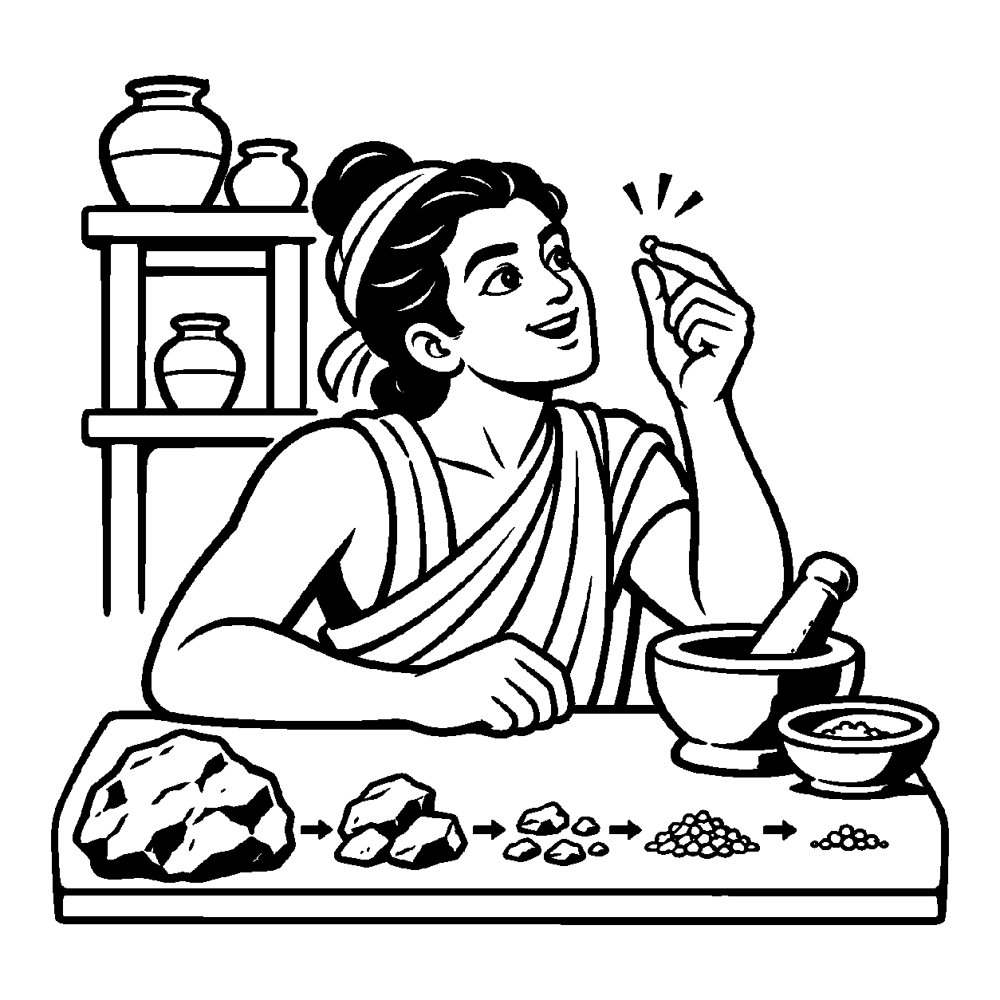
K02_C013 · અણુશિલ્પી અને સૂક્ષ્મતાની ખોજ
૧૩. અંતિમ અપરસંગ્રહભેદક વ્યવહારનય દ્રવ્યાર્થિક પ્રતિપાદક વ્યવહારpress/K02_C013_chapter_068_1_antima_apara_sangraha_bhedaka_vyavahara_dravyarthika_pratipadaka_katha_r01_press.png
press_pixels_validated_review_pending
K02_C014 · મેળો, ભીડ અને એકલ યાત્રી
૧૪. અંતિમ અખંડ વ્યવહારનય દ્રવ્યાર્થિક પ્રતિપાદક વ્યવહારpress/K02_C014_chapter_068_2_antima_akhanda_vyavahara_dravyarthika_pratipadaka_katha_r01_press.png
press_pixels_validated_review_pending
K03_C001 · અંધારી ગુફા અને છ દીવાઓ
૧. પરસંગ્રહભેદક વ્યવહારનયનામક દ્રવ્યાર્થિકનયpress/K03_C001_chapter_009_para_sangraha_bhedaka_vyavahara_dravyarthika_naya_katha_r01_press.png
press_pixels_validated_review_pending
K03_C002 · બંધન અને મુક્તિનો સેતુ
૨. અપરસંગ્રહભેદક વ્યવહારનયનામક દ્રવ્યાર્થિકનયpress/K03_C002_chapter_010_apara_sangraha_bhedaka_vyavahara_dravyarthika_naya_katha_r01_press.png
press_pixels_validated_review_pending
K03_C003 · કિલ્લાની દીવાલ અને શિલ્પકારની દ્રષ્ટિ
૩. અંતિમ અપરસંગ્રહભેદક વ્યવહારનયનામક દ્રવ્યાર્થિકનયpress/K03_C003_chapter_011_antima_apara_sangraha_bhedaka_vyavahara_dravyarthika_naya_katha_r01_press.png
press_pixels_validated_review_pending
K03_C004 · અદ્વૈતનો તર્ક અને તરસ્યો પંડિત
૪. પરમશુદ્ધ અપરસંગ્રહભેદક વ્યવહારનયનામક દ્રવ્યાર્થિકનયpress/K03_C004_chapter_012_paramashuddha_apara_sangraha_bhedaka_vyavahara_dravyarthika_naya_katha_r01_press.png
press_pixels_validated_review_pending
K03_C005 · અંબાડી પરથી મોક્ષ અને સાધકનો સંશય
૫. શુદ્ધ અપરસંગ્રહભેદક વ્યવહારનયનામક દ્રવ્યાર્થિકનયpress/K03_C005_chapter_013_shuddha_apara_sangraha_bhedaka_vyavahara_dravyarthika_naya_katha_r01_press.png
press_pixels_validated_review_pending
K03_C006 · અરણ્યનો માર્ગ અને યતનાશીલ સાધક
૬. અશુદ્ધ અપરસંગ્રહભેદક વ્યવહારનયનામક દ્રવ્યાર્થિકનયpress/K03_C006_chapter_014_ashuddha_apara_sangraha_bhedaka_vyavahara_dravyarthika_naya_katha_r01_press.png
press_pixels_validated_review_pending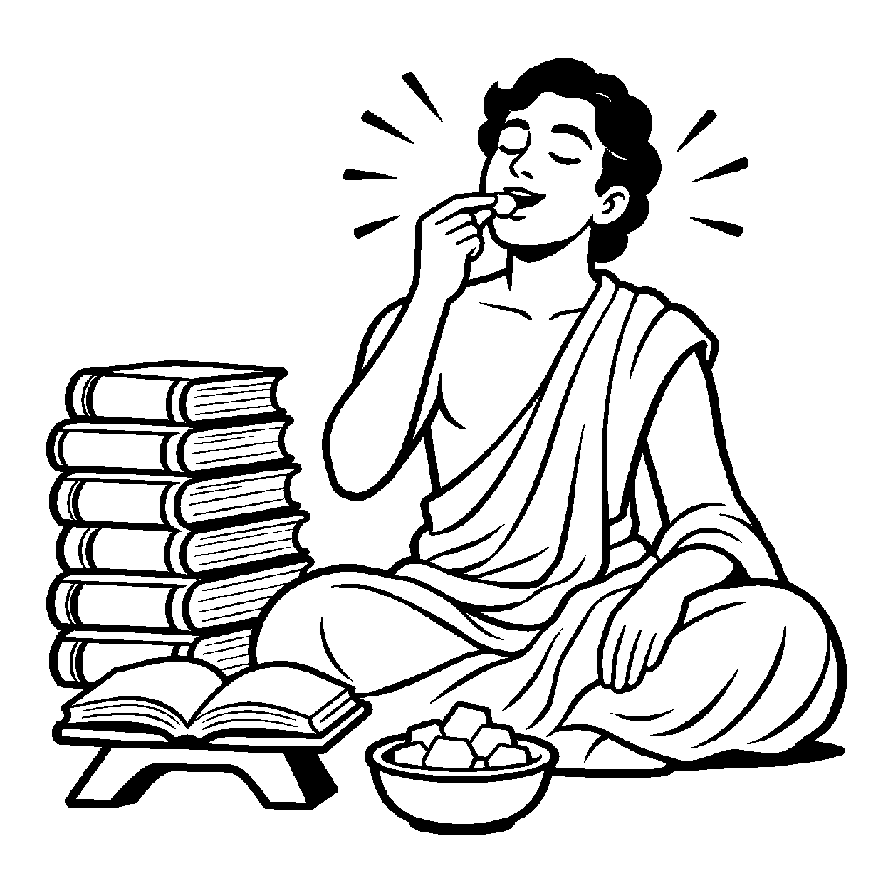
K03_C007 · પુસ્તકોનો ભાર અને સાકરનો સ્વાદ
૭. પરમશુદ્ધ અભેદવિષયી અંતિમ વ્યવહારનયનામક દ્રવ્યાર્થિકનયpress/K03_C007_chapter_015_paramashuddha_abhedavishayi_antima_vyavahara_dravyarthika_naya_katha_r01_press.png
press_pixels_validated_review_pending
K03_C008 · અંધારી ગુફા અને રત્નભંડાર
૮. પરમશુદ્ધ ભેદવિષયી અંતિમ વ્યવહારનયનામક દ્રવ્યાર્થિકનયpress/K03_C008_chapter_016_paramashuddha_bhedavishayi_antima_vyavahara_dravyarthika_naya_katha_r01_press.png
press_pixels_validated_review_pending
K03_C009 · સમવસરણનું તેજ અને ભક્તની યાચના
૯. શુદ્ધ અભેદવિષયી અંતિમ વ્યવહારનયનામક દ્રવ્યાર્થિકનયpress/K03_C009_chapter_017_shuddha_abhedavishayi_antima_vyavahara_dravyarthika_naya_katha_r01_press.png
press_pixels_validated_review_pending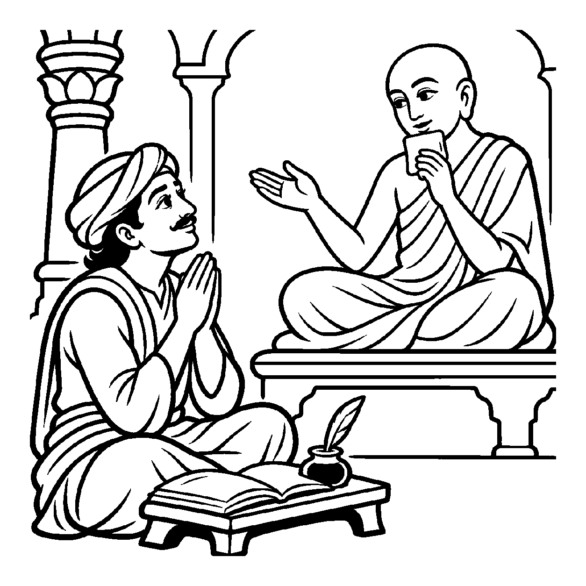
K03_C010 · ચાર રત્નોનો મુગટ અને સ્તોત્રકારની ભક્તિ
૧૦. શુદ્ધભેદવિષયી અંતિમ વ્યવહારનયનામક દ્રવ્યાર્થિકનયpress/K03_C010_chapter_018_shuddhabhedavishayi_antima_vyavahara_dravyarthika_naya_katha_r01_press.png
press_pixels_validated_review_pending
K03_C011 · ઉપશમ શ્રેણી અને મુનિરાજની જાગૃતિ
૧૧. અવ્યક્ત અશુદ્ધ અંતિમ વ્યવહારનયનામક દ્રવ્યાર્થિકનયpress/K03_C011_chapter_019_avyakta_ashuddha_antima_vyavahara_dravyarthika_naya_katha_r01_press.png
press_pixels_validated_review_pending
K03_C012 · ભભૂકતો ક્રોધ અને ક્ષમાનું શીતળ જળ
૧૨. વ્યક્ત અશુદ્ધ અંતિમ વ્યવહારનયનામક દ્રવ્યાર્થિકનયpress/K03_C012_chapter_020_vyakta_ashuddha_antima_vyavahara_dravyarthika_naya_katha_r01_press.png
press_pixels_validated_review_pendingK03_C013 · કાદવમાં ખરડાયેલો રાજકુમાર
૧૩. ઉપાધિનિરપેક્ષ શુદ્ધ દ્રવ્યાર્થિકનયpress/K03_C013_chapter_021_upadhinirapeksha_shuddha_dravyarthika_naya_katha_r01_press.png
press_pixels_validated_review_pending
K03_C014 · કુંડળનો વિલાપ અને ઝવેરીનો વિવેક
૧૪. ઉત્પાદવ્યયગૌણ સત્તાગ્રાહક શુદ્ધ દ્રવ્યાર્થિકનયpress/K03_C014_chapter_022_utpadavyayagauna_sattagrahaka_shuddha_dravyarthika_naya_katha_r01_press.png
press_pixels_validated_review_pending
K03_C015 · અગ્નિની શોધ અને બુદ્ધિમાન શિષ્ય
૧૫. ભેદકલ્પનાનિરપેક્ષ શુદ્ધ દ્રવ્યાર્થિકનયpress/K03_C015_chapter_023_bhedakalpananirapeksha_shuddha_dravyarthika_naya_katha_r01_press.png
press_pixels_validated_review_pending
K03_C016 · ઉકળતું જળ અને નિશ્ચયાભાસી પંડિત
૧૬. ઉપાધિસાપેક્ષ અશુદ્ધ દ્રવ્યાર્થિકનયpress/K03_C016_chapter_024_upadhisapeksha_ashuddha_dravyarthika_naya_katha_r01_press.png
press_pixels_validated_review_pending
K03_C017 · ધૂળભર્યો અરીસો અને રાજમહેલનો ઝવેરી
૧૭. ઉપાધ્યભાવાપેક્ષ શુદ્ધ દ્રવ્યાર્થિકનયpress/K03_C017_chapter_024_1_upadhyabhavapeksha_shuddha_dravyarthika_naya_katha_r01_press.png
press_pixels_validated_review_pending
K03_C018 · અંધકાર સામે લાકડીઓ અને દીપકનો પ્રકાશ
૧૮. શુદ્ધભાવનિરપેક્ષ શુદ્ધ દ્રવ્યાર્થિકનયpress/K03_C018_chapter_024_2_shuddhabhavanirapeksha_shuddha_dravyarthika_naya_katha_r01_press.png
press_pixels_validated_review_pending
K03_C019 · ગોરસની યાત્રા અને ખેડૂતની મૂંઝવણ
૧૯. ઉત્પાદવ્યયસાપેક્ષ અશુદ્ધ દ્રવ્યાર્થિકનયpress/K03_C019_chapter_025_utpadavyayasapeksha_ashuddha_dravyarthika_naya_katha_r01_press.png
press_pixels_validated_review_pending
K03_C020 · અખંડ હીરો અને ઝવેરીની પાઠશાળા
૨૦. ભેદકલ્પનાસાપેક્ષ અશુદ્ધ દ્રવ્યાર્થિકનયpress/K03_C020_chapter_026_bhedakalpanasapeksha_ashuddha_dravyarthika_naya_katha_r01_press.png
press_pixels_validated_review_pending
K03_C021 · દર્પણ સામે વૃદ્ધ પુરુષ અને બાળપણની છબી
૨૧. અન્વય દ્રવ્યાર્થિકનયpress/K03_C021_chapter_027_anvaya_dravyarthika_naya_katha_r01_press.png
press_pixels_validated_review_pending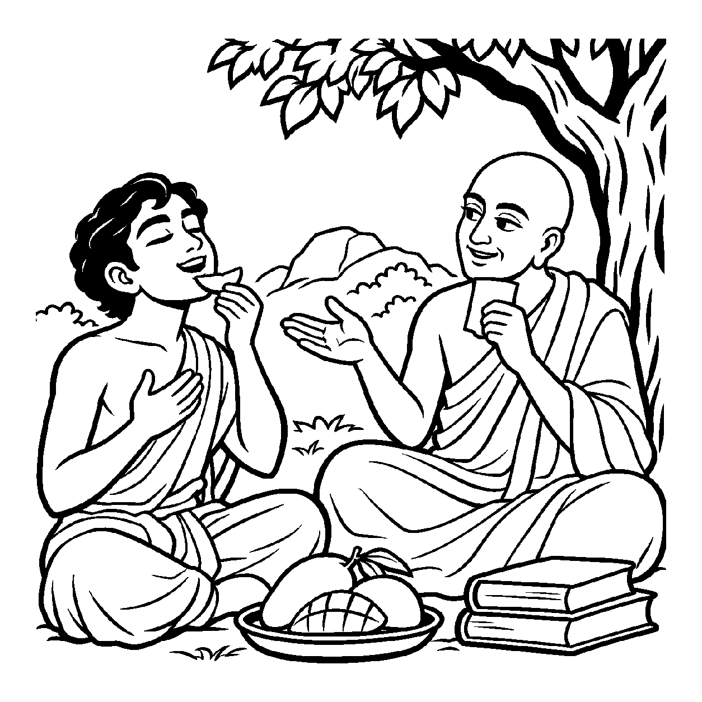
K03_C022 · શૂન્યતાની ખીણ અને દીપકનું અસ્તિત્વ
૨૨. સ્વદ્રવ્યાદિગ્રાહક દ્રવ્યાર્થિકનયpress/K03_C022_chapter_028_svadravyadigrahaka_dravyarthika_naya_katha_r01_press.png
press_pixels_validated_review_pending
K03_C023 · કલંકનો ભય અને જ્ઞાનીનો અભયબોધ
૨૩. પરદ્રવ્યાદિગ્રાહક દ્રવ્યાર્થિકનયpress/K03_C023_chapter_029_paradravyadigrahaka_dravyarthika_naya_katha_r01_press.png
press_pixels_validated_review_pending
K03_C024 · વાવાઝોડું અને સ્થિર દીવાદાંડી
૨૪. પરમભાવગ્રાહક દ્રવ્યાર્થિકનયpress/K03_C024_chapter_030_paramabhavagrahaka_dravyarthika_naya_katha_r01_press.png
press_pixels_validated_review_pending
K03_C025 · પંડિતોનો વિવાદ અને સંતનું મહામૌન
૨૫. શુદ્ધપારિણામિક પરમભાવગ્રાહક શુદ્ધ દ્રવ્યાર્થિકનયpress/K03_C025_chapter_030_1_shuddhaparinamika_paramabhavagrahaka_shuddha_dravyarthika_naya_katha_r01_press.png
press_pixels_validated_review_pending
K03_C026 · ભિખારી બનેલો રાજકુંવર અને સદ્ગુરૂની દ્રષ્ટિ
૨૬. અખંડ પરમશુદ્ધ નિશ્ચયનયpress/K03_C026_chapter_044_akhanda_paramashuddha_nishchayanaya_katha_r01_press.png
press_pixels_validated_review_pending
K03_C027 · સિંહનું બચ્ચું અને ગર્જનાનો સાક્ષાત્કાર
૨૭. શક્તિબોધક પરમશુદ્ધ નિશ્ચયનયpress/K03_C027_chapter_045_shaktibodhaka_paramashuddha_nishchayanaya_katha_r01_press.png
press_pixels_validated_review_pending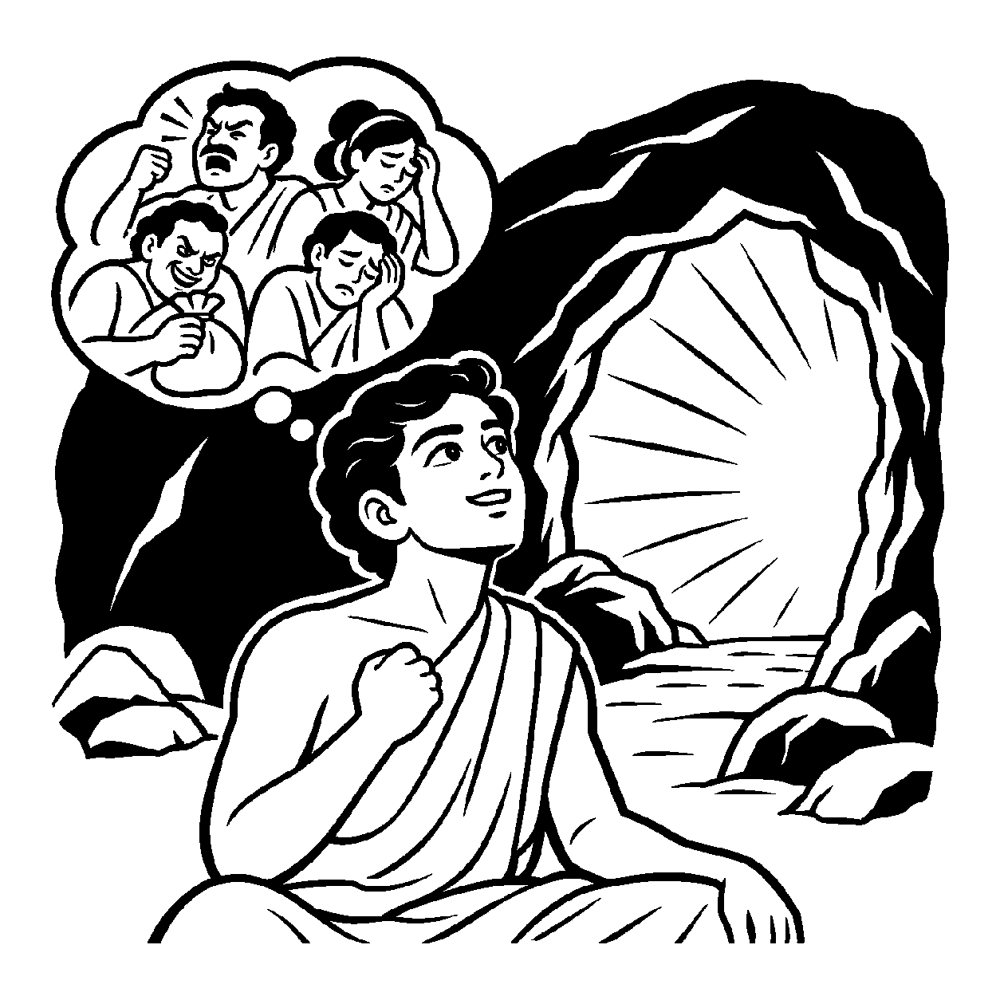
K03_C028 · અંધારી ગુફા અને સાક્ષાત્ પ્રકાશ
૨૮. શુદ્ધ નિશ્ચયનયpress/K03_C028_chapter_046_shuddha_nishchayanaya_katha_r01_press.png
press_pixels_validated_review_pending
K03_C029 · શુષ્ક જ્ઞાન અને અમૃતરસની શોધ
૨૯. સભેદ શુદ્ધ નિશ્ચયનયpress/K03_C029_chapter_046_1_sabheda_shuddha_nishchayanaya_katha_r01_press.png
press_pixels_validated_review_pending
K03_C030 · બીજનો ચંદ્ર અને સાધકનું હૈયું
૩૦. અપૂર્ણશુદ્ધ નિશ્ચયનયpress/K03_C030_chapter_046_2_apurnashuddha_nishchayanaya_katha_r01_press.png
press_pixels_validated_review_pending
K03_C031 · અરીસામાં પ્રતિબિંબિત ક્રોધ
૩૧. અશુદ્ધ નિશ્ચયનયpress/K03_C031_chapter_047_ashuddha_nishchayanaya_katha_r01_press.png
press_pixels_validated_review_pending
K03_C032 · વૈદ્યરાજ અને ચાર વિકારોનું નિદાન
૩૨. સભેદ અશુદ્ધનિશ્ચયનયpress/K03_C032_chapter_047_1_sabheda_ashuddha_nishchayanaya_katha_r01_press.png
press_pixels_validated_review_pending
K03_C033 · કાચું સોનું અને સોનીનો વિવેક
૩૩. વિવક્ષિતૈકદેશ શુદ્ધનિશ્ચયનયpress/K03_C033_chapter_048_vivakshitaikadesha_shuddha_nishchayanaya_katha_r01_press.png
press_pixels_validated_review_pending
K03_C034 · વાદવિવાદની ધૂળ અને મહાસાગરની શાંતિ
૩૪. શુદ્ધનયpress/K03_C034_chapter_049_shuddhanaya_katha_r01_press.png
press_pixels_validated_review_pending
K03_C035 · અરીસો અને સળગતી જ્વાળાઓ
૩૫. પ્રતિષેધક શુદ્ધનયpress/K03_C035_chapter_049_1_pratishedhaka_shuddhanaya_katha_r01_press.png
press_pixels_validated_review_pending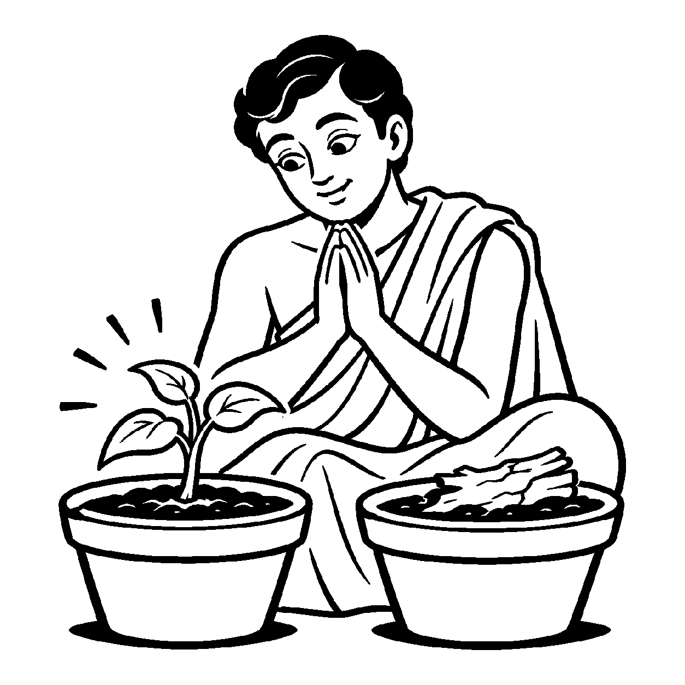
K03_C036 · સૂકું લાકડું અને બીજની આંતરિક ક્ષમતા
૩૬. ઉપાદાનદૃષ્ટિ શુદ્ધનયpress/K03_C036_chapter_049_2_upadanadrishti_shuddhanaya_katha_r01_press.png
press_pixels_validated_review_pending
K03_C037 · અખંડ રત્ન અને ઝવેરીની પરખ
૩૭. પરમશુદ્ધભેદવિષયી વ્યવહારનયpress/K03_C037_chapter_050_paramashuddhabhedavishayi_vyavaharanaya_katha_r01_press.png
press_pixels_validated_review_pending
K03_C038 · અગ્નિમાં તપેલું સુવર્ણ અને તેના શુદ્ધ અલંકારો
૩૮. શુદ્ધભેદવિષયી દ્રવ્યાર્થિકનયpress/K03_C038_chapter_051_shuddhabhedavishayi_dravyarthikanaya_katha_r01_press.png
press_pixels_validated_review_pending
K03_C039 · સરોવરના વમળો અને સાધકનો સંયમ
૩૯. અશુદ્ધપર્યાયવિષયી વ્યવહારનયpress/K03_C039_chapter_052_ashuddhaparayayavishayi_vyavaharanaya_katha_r01_press.png
press_pixels_validated_review_pending
K03_C040 · સ્ફટિક મણિ અને રંગીન વસ્ત્ર
૪૦. ઉપાધિસાપેક્ષ અશુદ્ધ દ્રવ્યાર્થિકનયpress/K03_C040_chapter_053_upadhisapeksha_ashuddha_dravyarthikanaya_katha_r01_press.png
press_pixels_validated_review_pending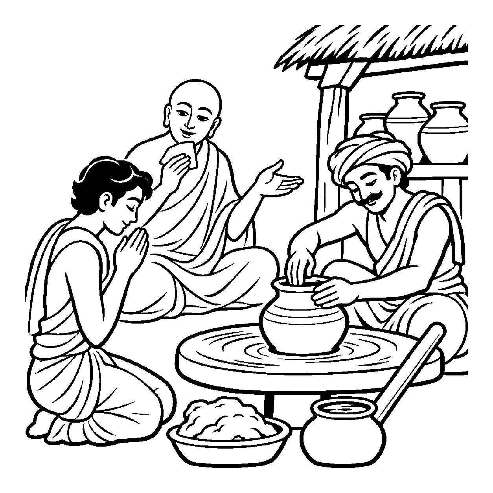
K03_C041 · ચાકડો, કુંભાર અને ઘડાનું રહસ્ય
૪૧. નિમિત્તદૃષ્ટિ વ્યવહારનયpress/K03_C041_chapter_053_1_nimittadrishti_vyavaharanaya_katha_r01_press.png
press_pixels_validated_review_pending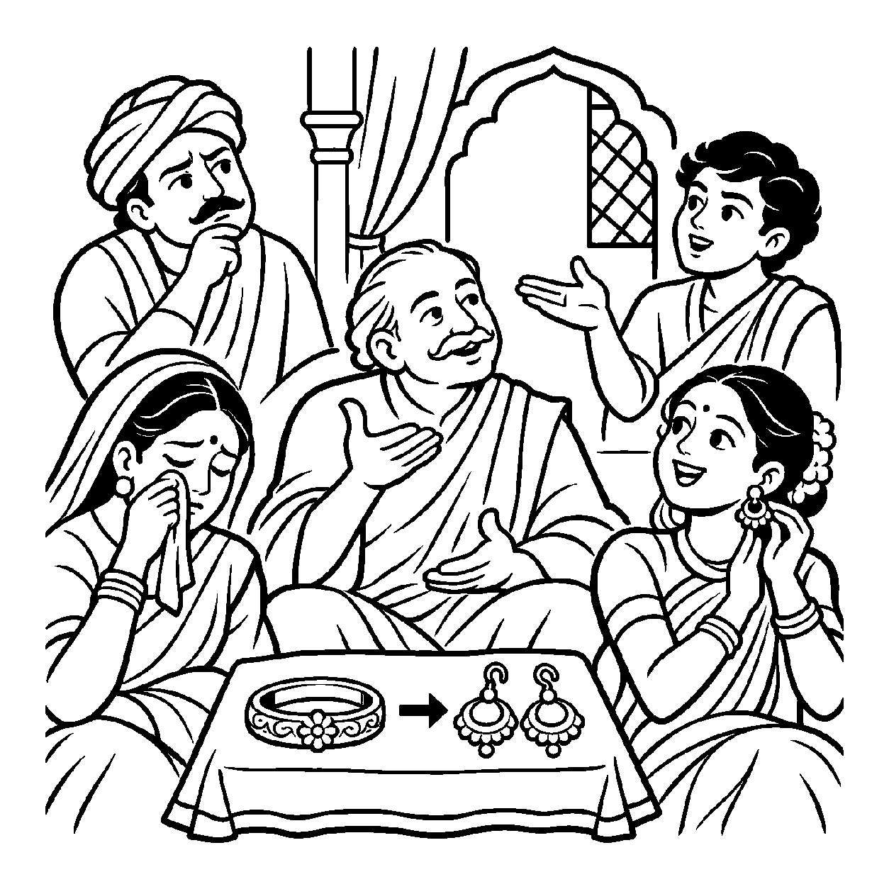
K03_C042 · સોનાનું કંકણ અને ત્રણ વિવાદો
૪૨. ઉત્પાદવ્યયસાપેક્ષ અશુદ્ધ દ્રવ્યાર્થિકનયpress/K03_C042_chapter_054_utpadavyayasapeksha_ashuddha_dravyarthikanaya_katha_r01_press.png
press_pixels_validated_review_pending
K03_C043 · અખંડ જ્યોતિ અને દીપકનો પ્રકાશ
૪૩. અખંડ પરમશુદ્ધ સદ્ભૂત વ્યવહારpress/K03_C043_chapter_069_akhanda_paramashuddha_sadbhuta_vyavahara_katha_r01_press.png
press_pixels_validated_review_pending
K03_C044 · ચંદનનું લાકડું અને સુગંધનો ભેદ
૪૪. ગુણગુણિભેદક પરમશુદ્ધ સદ્ભૂત વ્યવહારpress/K03_C044_chapter_069_1_gunagunibhedaka_paramashuddha_sadbhuta_vyavahara_katha_r01_press.png
press_pixels_validated_review_pendingK03_C045 · ચિંતામણિ રત્ન અને ભિખારીનો ભ્રમ
૪૫. સગુણ પરમશુદ્ધ સદ્ભૂત વ્યવહારpress/K03_C045_chapter_070_saguna_paramashuddha_sadbhuta_vyavahara_katha_r01_press.png
press_pixels_validated_review_pending
K03_C046 · અદાલતનો ચુકાદો અને નિર્દોષ શ્રાવક
૪૬. પ્રતિષેધક શુદ્ધનય પ્રતિપાદક વ્યવહારpress/K03_C046_chapter_070_1_pratishedhaka_shuddhanaya_pratipadaka_vyavahara_katha_r01_press.png
press_pixels_validated_review_pending
K03_C047 · અગ્નિ અને જ્વાળાનું અખંડ ઐક્ય
૪૭. અભેદ શુદ્ધ સદ્ભૂત વ્યવહારpress/K03_C047_chapter_071_abheda_shuddha_sadbhuta_vyavahara_katha_r01_press.png
press_pixels_validated_review_pending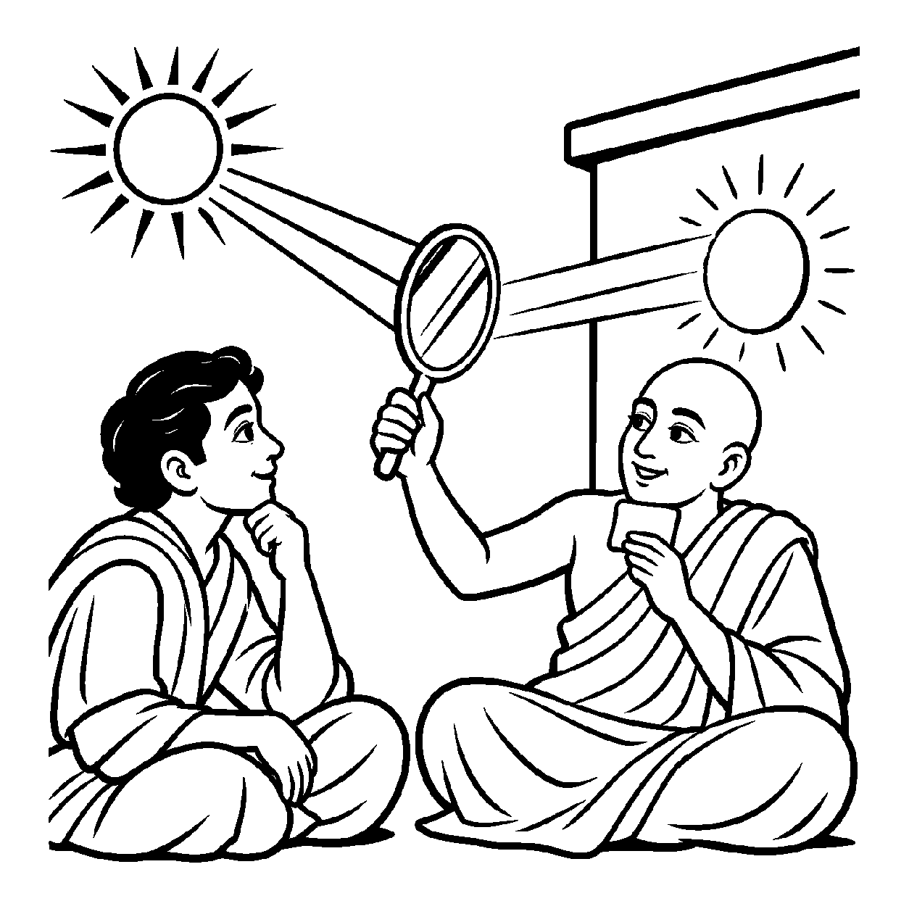
K03_C048 · અરીસો અને સૂર્યના ત્રણ તેજો
૪૮. સભેદ શુદ્ધ સદ્ભૂત વ્યવહારpress/K03_C048_chapter_072_sabheda_shuddha_sadbhuta_vyavahara_katha_r01_press.png
press_pixels_validated_review_pending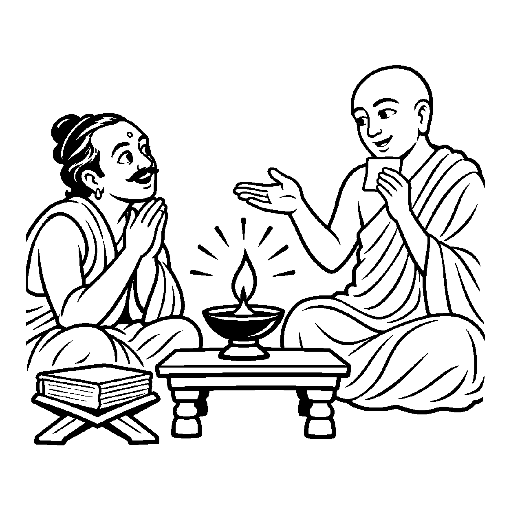
K03_C049 · દીપકનું સ્વયં પ્રકાશક રહસ્ય
૪૯. કારક-કારકીભેદક સદ્ભૂત વ્યવહારpress/K03_C049_chapter_073_karaka_karakibhedaka_sadbhuta_vyavahara_katha_r01_press.png
press_pixels_validated_review_pending
K03_C050 · ચૂલાનો ધુમાડો અને રસોઈયાનો સ્વીકાર
૫૦. કારક-કારકીભેદક અશુદ્ધ સદ્ભૂત વ્યવહારpress/K03_C050_chapter_073_1_karaka_karakibhedaka_ashuddha_sadbhuta_vyavahara_katha_r01_press.png
press_pixels_validated_review_pending
K03_C051 · શ્રેણી ચડતા મુનિ અને સૂક્ષ્મ લોભનો તંતુ
૫૧. અનુપચરિત અશુદ્ધ સદ્ભૂત વ્યવહારpress/K03_C051_chapter_074_anupacharita_ashuddha_sadbhuta_vyavahara_katha_r01_press.png
press_pixels_validated_review_pending
K03_C052 · ઉકળતું દૂધ અને શેઠનો પ્રકોપ
૫૨. ઉપચરિત અશુદ્ધ સદ્ભૂત વ્યવહારpress/K03_C052_chapter_075_upacharita_ashuddha_sadbhuta_vyavahara_katha_r01_press.png
press_pixels_validated_review_pending
K03_C053 · મદિરાનો નશો અને રાજકુમારની ઓળખ
૫૩. ઉપાધિસાપેક્ષ અશુદ્ધ દ્રવ્યાર્થિક પ્રતિપાદક વ્યવહારpress/K03_C053_chapter_076_upadhisapeksha_ashuddha_dravyarthikapratipadaka_vyavahara_katha_r01_press.png
press_pixels_validated_review_pending
K03_C054 · હરણનો મોહ અને સંગીતની જાળ
૫૪. ઉપચરિત ઉપાધિસાપેક્ષ અશુદ્ધ દ્રવ્યાર્થિક પ્રતિપાદક વ્યવહારpress/K03_C054_chapter_077_upacharita_upadhisapeksha_ashuddha_dravyarthikapratipadaka_vyavahara_katha_r01_press.png
press_pixels_validated_review_pending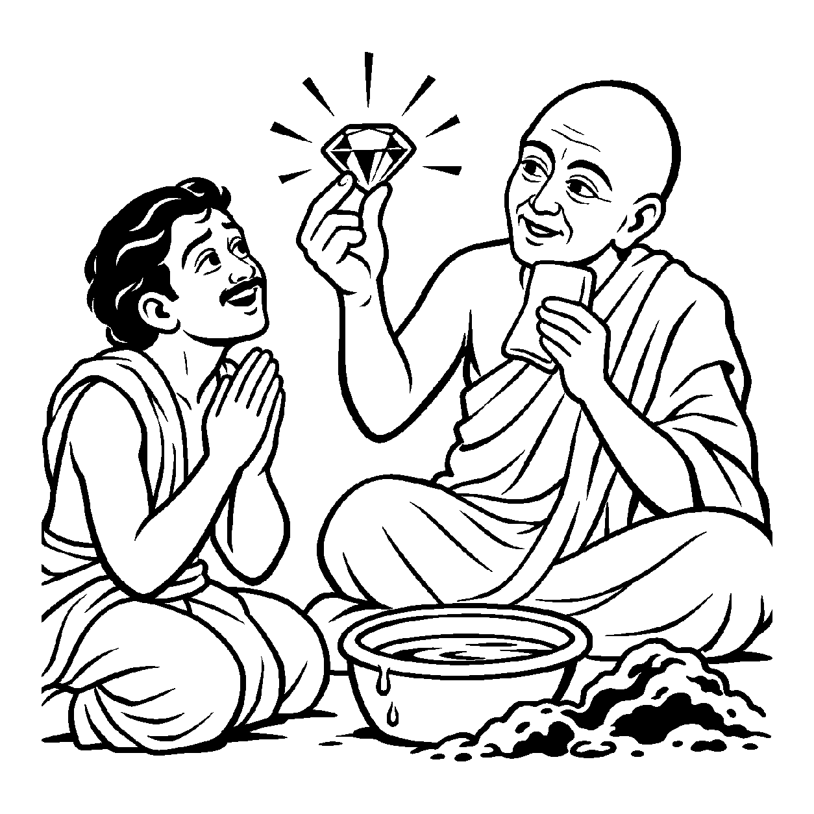
K03_C055 · કાદવમાં રત્ન અને ઝવેરીની પારખુ આંખ
૫૫. ઉપાધિનિરપેક્ષ શુદ્ધ દ્રવ્યાર્થિક પ્રતિપાદક વ્યવહારpress/K03_C055_chapter_078_upadhinirapeksha_shuddhadravyarthikapratipadaka_vyavahara_katha_r01_press.png
press_pixels_validated_review_pending
K03_C056 · સાગરનાં મોજાં અને ડૂબકી મારનાર સાધક
૫૬. ઉત્પાદવ્યયગૌણ સત્તાગ્રાહક શુદ્ધ દ્રવ્યાર્થિક પ્રતિપાદક વ્યવહારpress/K03_C056_chapter_079_utpadavyayagauna_sattagrahaka_shuddha_dravyarthikapratipadaka_vyavahara_katha_r01_press.png
press_pixels_validated_review_pending
K03_C057 · સાકરનો ગાંગડો અને મીઠાશની શોધ
૫૭. ભેદકલ્પનાનિરપેક્ષ શુદ્ધ દ્રવ્યાર્થિક પ્રતિપાદક વ્યવહારpress/K03_C057_chapter_080_bhedakalpananirapeksha_shuddhadravyarthikapratipadaka_vyavahara_katha_r01_press.png
press_pixels_validated_review_pending
K03_C058 · માટીનો કળશ અને ઠીકરીનો વિવેક
૫૮. ઉત્પાદવ્યયસાપેક્ષ અશુદ્ધ દ્રવ્યાર્થિક પ્રતિપાદક વ્યવહારpress/K03_C058_chapter_081_utpadavyayasapeksha_ashuddha_dravyarthikapratipadaka_vyavahara_katha_r01_press.png
press_pixels_validated_review_pending
K03_C059 · વિશાળ વૃક્ષ અને માળીની સમજણ
૫૯. ભેદકલ્પનાસાપેક્ષ અશુદ્ધ દ્રવ્યાર્થિક પ્રતિપાદક વ્યવહારpress/K03_C059_chapter_082_bhedakalpanasapeksha_ashuddhadravyarthikapratipadaka_vyavahara_katha_r01_press.png
press_pixels_validated_review_pending
K03_C060 · સોનાની માળા અને અદ્રશ્ય દોરો
૬૦. અન્વય દ્રવ્યાર્થિક પ્રતિપાદક વ્યવહારpress/K03_C060_chapter_083_anvayadravyarthikapratipadaka_vyavahara_katha_r01_press.png
press_pixels_validated_review_pending
K03_C061 · પોતાના ઘરમાં રાજા અને સ્વતંત્રતાનો વિવેક
૬૧. સ્વદ્રવ્યાદિગ્રાહક દ્રવ્યાર્થિક પ્રતિપાદક વ્યવહારpress/K03_C061_chapter_084_svadravyadigrahaka_dravyarthikapratipadaka_vyavahara_katha_r01_press.png
press_pixels_validated_review_pending
K03_C062 · સોનાની લગડી અને લોખંડનો છેદ
૬૨. પરદ્રવ્યાદિગ્રાહક દ્રવ્યાર્થિક પ્રતિપાદક વ્યવહારpress/K03_C062_chapter_085_paradravyadigrahaka_dravyarthikapratipadaka_vyavahara_katha_r01_press.png
press_pixels_validated_review_pending
K03_C063 · નીલ આકાશ અને વાદળોના વમળો
૬૩. પરમભાવગ્રાહક દ્રવ્યાર્થિક પ્રતિપાદક વ્યવહારpress/K03_C063_chapter_086_paramabhavagrahaka_dravyarthikapratipadaka_vyavahara_katha_r01_press.png
press_pixels_validated_review_pending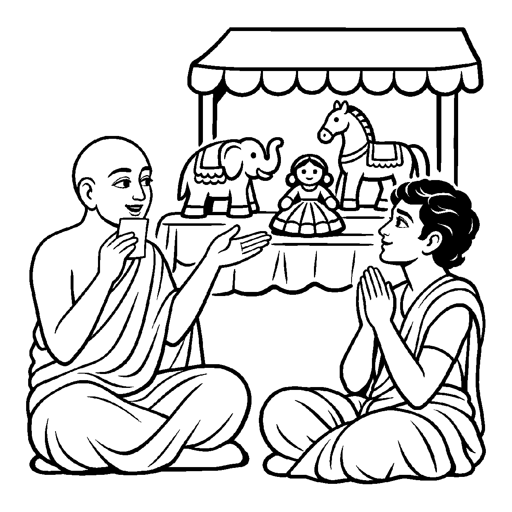
K03_C064 · માટીનાં રમકડાં અને બાળકનો મોહ
૬૪. અશુદ્ધસ્થૂલ ઋજુસૂત્ર પ્રતિપાદક વ્યવહારpress/K03_C064_chapter_087_ashuddhasthula_rjusutrapratipadaka_vyavahara_katha_r01_press.png
press_pixels_validated_review_pending
K03_C065 · સિદ્ધશિલાનો આકાર અને શિષ્યની જિજ્ઞાસા
૬૫. શુદ્ધસ્થૂલ-સૂક્ષ્મ ઋજુસૂત્ર પ્રતિપાદક વ્યવહારpress/K03_C065_chapter_088_shuddhasthula_sukshma_rjusutrapratipadaka_vyavahara_katha_r01_press.png
press_pixels_validated_review_pending
K03_C066 · અરીસો અને શિયાળાનું ધુમ્મસ
૬૬. અશુદ્ધસૂક્ષ્મ ઋજુસૂત્ર પ્રતિપાદક વ્યવહારpress/K03_C066_chapter_089_ashuddhasukshma_rjusutrapratipadaka_vyavahara_katha_r01_press.png
press_pixels_validated_review_pending
K03_C067 · સૂર્યકિરણો અને અવિરત પ્રકાશનો ઝરો
૬૭. શુદ્ધસૂક્ષ્મ ઋજુસૂત્ર પ્રતિપાદક વ્યવહારpress/K03_C067_chapter_090_shuddhasukshma_rjusutrapratipadaka_vyavahara_katha_r01_press.png
press_pixels_validated_review_pending
K03_C068 · અચલ મેરુ અને શિલ્પીનો ગર્વ
૬૮. અનાદિનિત્ય પર્યાયાર્થિક પ્રતિપાદક વ્યવહારpress/K03_C068_chapter_091_anadinitya_paryayarthikapratipadaka_vyavahara_katha_r01_press.png
press_pixels_validated_review_pending
K03_C069 · બળેલું બીજ અને મુક્તિનો વિશ્વાસ
૬૯. સાદિનિત્ય પર્યાયાર્થિક પ્રતિપાદક વ્યવહારpress/K03_C069_chapter_092_sadinitya_paryayarthikapratipadaka_vyavahara_katha_r01_press.png
press_pixels_validated_review_pending
K03_C070 · પાણીના પરપોટા અને રાજાનો વૈરાગ્ય
૭૦. સત્તાગૌણ ઉત્પાદ-વ્યયગ્રાહક અશુદ્ધ પર્યાયાર્થિક પ્રતિપાદક વ્યવહારpress/K03_C070_chapter_093_sattagauna_utpadavyayagrahaka_ashuddha_paryayarthikapratipadaka_vyavahara_katha_r01_press.png
press_pixels_validated_review_pending
K03_C071 · અવિરત નદીપ્રવાહ અને મુસાફરનો વિસ્મય
૭૧. સત્તાસાપેક્ષ નિત્ય અશુદ્ધ પર્યાયાર્થિક પ્રતિપાદક વ્યવહારpress/K03_C071_chapter_094_sattasapeksha_nitya_ashuddha_paryayarthikapratipadaka_vyavahara_katha_r01_press.png
press_pixels_validated_review_pending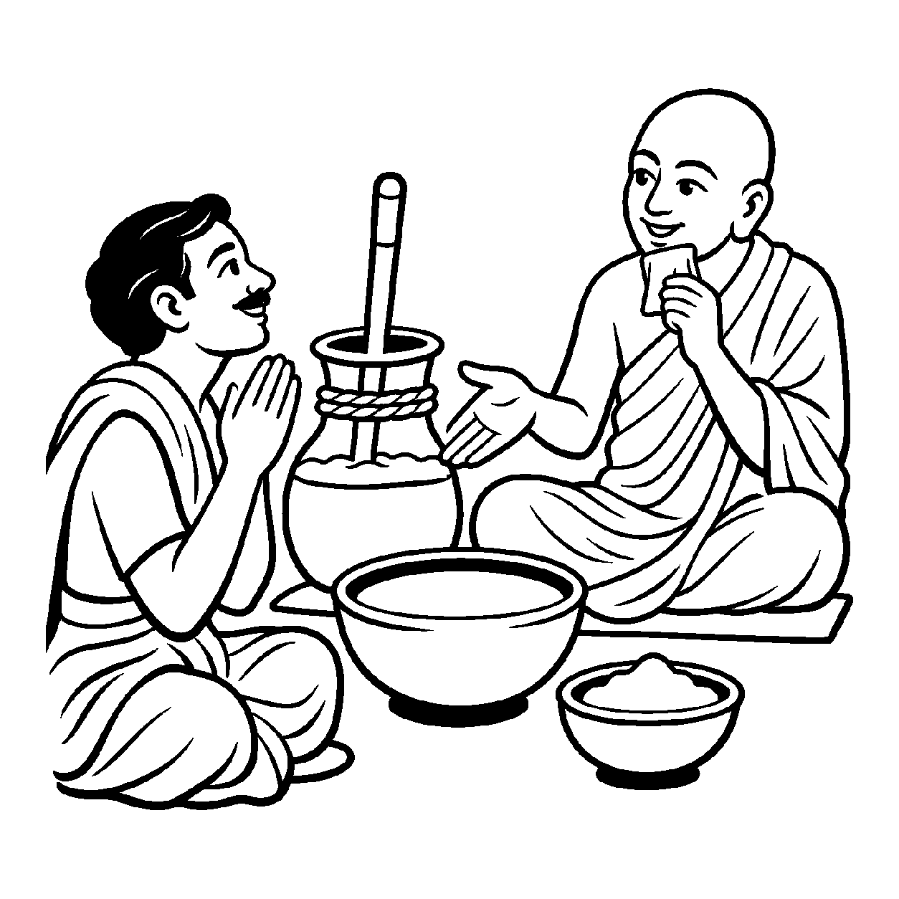
K03_C072 · દૂધમાં ઘી અને સાધકની નિરાશા
૭૨. ઉપાધિસાપેક્ષ નિત્ય અશુદ્ધ પર્યાયાર્થિક પ્રતિપાદક વ્યવહારpress/K03_C072_chapter_095_upadhisapeksha_nitya_ashuddhaparyayarthikapratipadaka_vyavahara_katha_r01_press.png
press_pixels_validated_review_pending
K03_C073 · રંગમંચનો નટ અને રાજાનો જન્મ-મરણ વિવેક
૭૩. ઉપાધિસાપેક્ષ અનિત્ય અશુદ્ધ પર્યાયાર્થિક પ્રતિપાદક વ્યવહારpress/K03_C073_chapter_096_upadhisapeksha_anitya_ashuddhaparyayarthikapratipadaka_vyavahara_katha_r01_press.png
press_pixels_validated_review_pending
K03_C074 · દૂધની પોતાની ખટાશ અને ગોવાળનો વિવેક
૭૪. સ્વજાતિ સદ્ભૂત વ્યવહારpress/K03_C074_chapter_097_svajati_sadbhuta_vyavahara_katha_r01_press.png
press_pixels_validated_review_pending
K03_C075 · અંધારી કોટડી અને ફાનસનો પ્રકાશ
૭૫. વિજાતિ સદ્ભૂત વ્યવહારpress/K03_C075_chapter_098_vijati_sadbhuta_vyavahara_katha_r01_press.png
press_pixels_validated_review_pending
K03_C076 · રાજદરબારનો દર્પણ અને જ્ઞાનીની સમદ્રષ્ટિ
૭૬. સ્વજાતિ-વિજાતિ સદ્ભૂત વ્યવહારpress/K03_C076_chapter_099_svajati_vijati_sadbhuta_vyavahara_katha_r01_press.png
press_pixels_validated_review_pending
K03_C077 · લોખંડનો લાલ ગોળો અને સોનીનો સંવાદ
૭૭. ઉપાધિજ ઉપચરિત સ્વભાવ વ્યવહારpress/K03_C077_chapter_103_upadhija_upacharita_svabhavavyavahara_katha_r01_press.png
press_pixels_validated_review_pending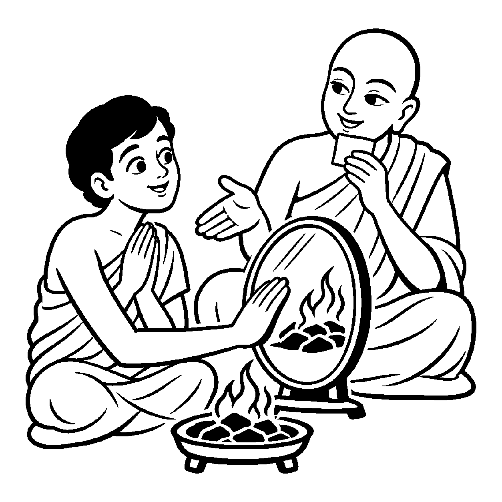
K03_C078 · અરીસામાં અંગારો અને બાળકનો ડર
૭૮. ઉપાધિજ ઉપચરિત પ્રતિફલન વ્યવહારpress/K03_C078_chapter_104_upadhija_upacharita_pratiphalanavyavahara_katha_r01_press.png
press_pixels_validated_review_pending
K03_C079 · સૂર્ય અને નગરનો પ્રકાશ
૭૯. સ્વાભાવિક ઉપચરિત સ્વભાવ વ્યવહારpress/K03_C079_chapter_105_svabhavika_upacharita_svabhavavyavahara_katha_r01_press.png
press_pixels_validated_review_pending
K03_C080 · નાનો દીવડો અને પંડિતનો ગર્વ
૮૦. અપરિપૂર્ણ ઉપચરિત સ્વભાવ વ્યવહારpress/K03_C080_chapter_105_1_aparipurna_upacharita_svabhavavyavahara_katha_r01_press.png
press_pixels_validated_review_pending
K03_C081 · સોનાની પાલખી અને રાજાની સવારી
૮૧. એકજાતિ દ્રવ્યે અન્યજાતિ દ્રવ્યોપચારક અસદ્ભૂત વ્યવહારpress/K03_C081_chapter_106_ekajatidravye_anyajatidravyopacharaka_asadbhuta_vyavahara_katha_r01_press.png
press_pixels_validated_review_pending
K03_C082 · રાણીનું રૂપ અને માટીનો ઢગલો
૮૨. સ્વજાતિદ્રવ્યે સ્વજાતિદ્રવ્યોપચારક અસદ્ભૂત વ્યવહારpress/K03_C082_chapter_106_1_svajatidravye_svajatidravyopacharaka_asadbhuta_vyavahara_katha_r01_press.png
press_pixels_validated_review_pending
K03_C083 · અન્ન જ પ્રાણ અને ભૂખ્યા મુસાફરની સંજીવની
૮૩. એકજાતિપર્યાયે અન્યજાતિપર્યાયોપચારક અસદ્ભૂત વ્યવહારpress/K03_C083_chapter_107_ekajatiparyaye_anyajatiparyayopacharaka_asadbhuta_vyavahara_katha_r01_press.png
press_pixels_validated_review_pending
K03_C084 · અરીસામાં અટવાયેલી નજર અને સરોવરનો શાંત કાંઠો
૮૪. સ્વજાતિપર્યાયે સ્વજાતિપર્યાયોપચારક અસદ્ભૂત વ્યવહારpress/K03_C084_chapter_108_svajatiparyaye_svajatiparyayopacharaka_asadbhuta_vyavahara_katha_r01_press.png
press_pixels_validated_review_pending
K03_C085 · ઘેરાયેલા ધુમ્મસમાં પ્રગટેલો જ્યોતિર્મય દીપક
૮૫. એકજાતિગુણે અન્યજાતિગુણોપચારક અસદ્ભૂત વ્યવહારpress/K03_C085_chapter_109_ekajatigune_anyajatigunopacharaka_asadbhuta_vyavahara_katha_r01_press.png
press_pixels_validated_review_pending
K03_C086 · વીણાના તાર અને સૂરનો અખંડ ઝંકાર
૮૬. સ્વજાતિગુણે સ્વજાતિગુણોપચારક અસદ્ભૂત વ્યવહારpress/K03_C086_chapter_110_svajatigune_svajatigunopacharaka_asadbhuta_vyavahara_katha_r01_press.png
press_pixels_validated_review_pending
K03_C087 · માટીના ઘડામાં ભરેલો આકાશનો ટુકડો
૮૭. એકજાતિદ્રવ્યે અન્યજાતિગુણોપચારક અસદ્ભૂત વ્યવહારpress/K03_C087_chapter_111_ekajatidravye_anyajatigunopacharaka_asadbhuta_vyavahara_katha_r01_press.png
press_pixels_validated_review_pending
K03_C088 · કસ્તુરીની સુગંધ અને હરણની શોધ
૮૮. સ્વજાતિદ્રવ્યે સ્વજાતિગુણોપચારક અસદ્ભૂત વ્યવહારpress/K03_C088_chapter_112_svajatidravye_svajatigunopacharaka_asadbhuta_vyavahara_katha_r01_press.png
press_pixels_validated_review_pending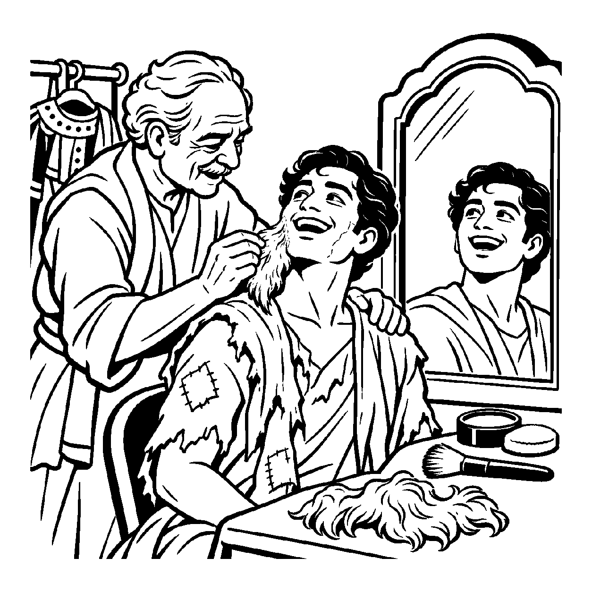
K03_C089 · નાટકના વેશ અને રંગમંચનો સાચો અભિનેતા
૮૯. એકજાતિદ્રવ્યે અન્યજાતિપર્યાયોપચારક અસદ્ભૂત વ્યવહારpress/K03_C089_chapter_113_ekajatidravye_anyajatiparyayopacharaka_asadbhuta_vyavahara_katha_r01_press.png
press_pixels_validated_review_pending
K03_C090 · વટવૃક્ષનું નાનું બીજ અને બગીચાનો માળી
૯૦. સ્વજાતિદ્રવ્યે સ્વજાતિપર્યાયોપચારક અસદ્ભૂત વ્યવહારpress/K03_C090_chapter_114_svajatidravye_svajatiparyayopacharaka_asadbhuta_vyavahara_katha_r01_press.png
press_pixels_validated_review_pending
K03_C091 · કાચની કૂપી અને ગગનચુંબી પર્વતમાળા
૯૧. એકજાતિગુણે અન્યજાતિદ્રવ્યોપચારક અસદ્ભૂત વ્યવહારpress/K03_C091_chapter_115_ekajatigune_anyajatidravyopacharaka_asadbhuta_vyavahara_katha_r01_press.png
press_pixels_validated_review_pending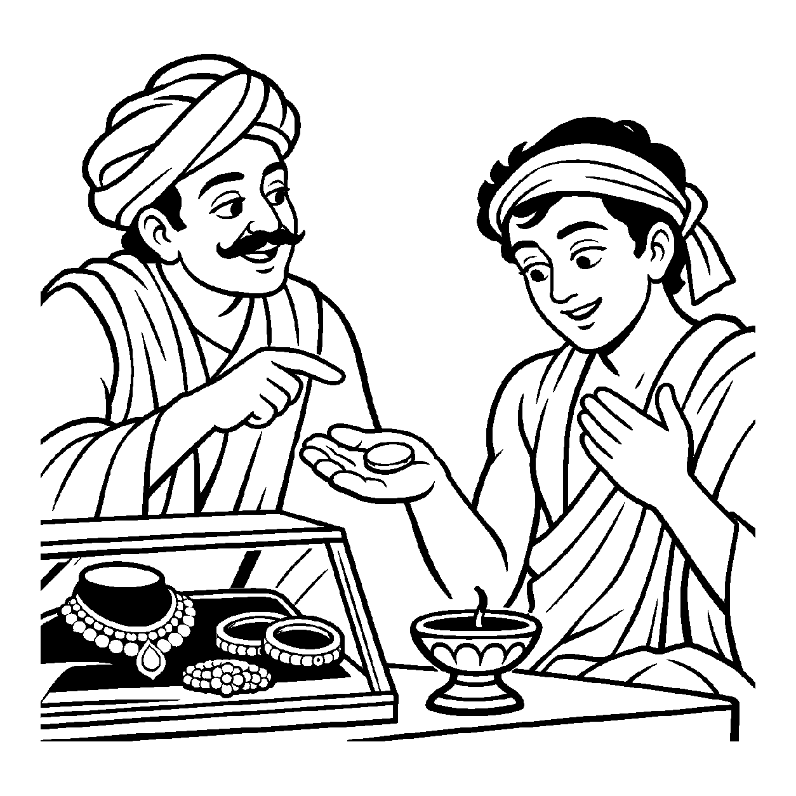
K03_C092 · સોનાની ચમક અને ઝવેરીનો વિવેક
૯૨. સ્વજાતિગુણે અન્યજાતિદ્રવ્યોપચારક અસદ્ભૂત વ્યવહારpress/K03_C092_chapter_116_svajatigune_anyajatidravyopacharaka_asadbhuta_vyavahara_katha_r01_press.png
press_pixels_validated_review_pending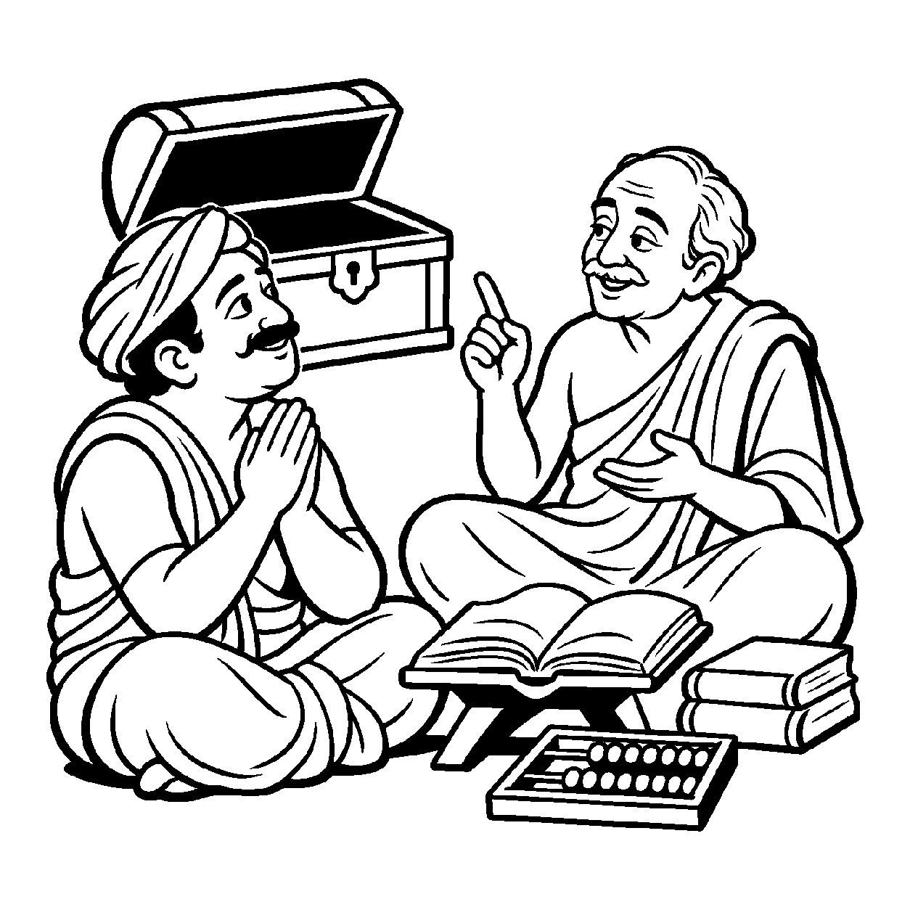
K03_C093 · ચોરાયેલી સંપત્તિ અને અખૂટ આંતરિક રત્ન
૯૩. એકજાતિગુણે અન્યજાતિપર્યાયોપચારક અસદ્ભૂત વ્યવહારpress/K03_C093_chapter_117_ekajatigune_anyajatiparyayopacharaka_asadbhuta_vyavahara_katha_r01_press.png
press_pixels_validated_review_pending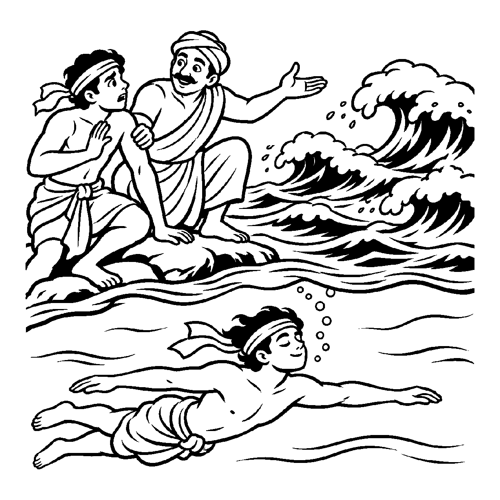
K03_C094 · દરિયાના મોજાં અને ઊંડાણનું શાંત જળ
૯૪. સ્વજાતિગુણે સ્વજાતિપર્યાયોપચારક અસદ્ભૂત વ્યવહારpress/K03_C094_chapter_118_svajatigune_svajatiparyayopacharaka_asadbhuta_vyavahara_katha_r01_press.png
press_pixels_validated_review_pending
K03_C095 · અરીસામાં દેખાયેલો સિંહ અને બુદ્ધિશાળી હરણ
૯૫. એકજાતિપર્યાયે અન્યજાતિપર્યાયોપચારક અસદ્ભૂત વ્યવહારpress/K03_C095_chapter_119_ekajatiparyaye_anyajatiparyayopacharaka_asadbhuta_vyavahara_katha_r01_press.png
press_pixels_validated_review_pendingK03_C096 · રેતીના મહેલ અને સમુદ્રની ભરતી
૯૬. સ્વજાતિપર્યાયે સ્વજાતિપર્યાયોપચારક અસદ્ભૂત વ્યવહારpress/K03_C096_chapter_120_svajatiparyaye_svajatiparyayopacharaka_asadbhuta_vyavahara_katha_r01_press.png
press_pixels_validated_review_pendingK03_C097 · માટીનો કૂકડો અને જીવંત પંખીનો વિવેક
૯૭. એકજાતિપર્યાયે અન્યજાતિદ્રવ્યોપચારક અસદ્ભૂત વ્યવહારpress/K03_C097_chapter_121_ekajatiparyaye_anyajatidravyopacharaka_asadbhuta_vyavahara_katha_r01_press.png
press_pixels_validated_review_pending
K03_C098 · કઠોર શિલ્પકાર અને નમ્રતાની મૂર્તિ
૯૮. સ્વજાતિપર્યાયે સ્વજાતિગુણોપચારક અસદ્ભૂત વ્યવહારpress/K03_C098_chapter_122_svajatiparyaye_svajatigunopacharaka_asadbhuta_vyavahara_katha_r01_press.png
press_pixels_validated_review_pending
K03_C099 · માળાના મોતી અને સોનાનો અદૃશ્ય દોરો
૯૯. સંશ્લિષ્ટ સ્વજાત્યુપચરિત અસદ્ભૂત વ્યવહારpress/K03_C099_chapter_123_sanshlishta_svajatyupacharita_asadbhuta_vyavahara_katha_r01_press.png
press_pixels_validated_review_pending
K03_C100 · ધર્મશાળાના મુસાફરો અને પ્રભાતનો માર્ગ
૧૦૦. અસંશ્લિષ્ટ સ્વજાત્યુપચરિત અસદ્ભૂત વ્યવહારpress/K03_C100_chapter_124_asanshlishta_svajatyupacharita_asadbhuta_vyavahara_katha_r01_press.png
press_pixels_validated_review_pending
K03_C101 · કાદવમાં ખૂંપેલો રથ અને અલિપ્ત સારથિ
૧૦૧. સંશ્લિષ્ટ વિજાત્યુપચરિત અસદ્ભૂત વ્યવહારpress/K03_C101_chapter_125_sanshlishta_vijatyupacharita_asadbhuta_vyavahara_katha_r01_press.png
press_pixels_validated_review_pending
K03_C102 · રાજાનો મહેલ અને વૃદ્ધ ફકીરનો પડાવ
૧૦૨. અસંશ્લિષ્ટ વિજાત્યુપચરિત અસદ્ભૂત વ્યવહારpress/K03_C102_chapter_126_asanshlishta_vijatyupacharita_asadbhuta_vyavahara_katha_r01_press.png
press_pixels_validated_review_pending
K03_C103 · લગ્નમંડપનો શણગાર અને પિતાનો ઊંડો સંશય
૧૦૩. સંશ્લિષ્ટ સ્વજાતિ-વિજાત્યુપચરિત અસદ્ભૂત વ્યવહારpress/K03_C103_chapter_127_sanshlishta_svajati_vijatyupacharita_asadbhuta_vyavahara_katha_r01_press.png
press_pixels_validated_review_pending
K03_C104 · ચક્રવર્તીનો વિજય અને શિલા પરનું નામ
૧૦૪. અસંશ્લિષ્ટ સ્વજાતિ-વિજાત્યુપચરિત અસદ્ભૂત વ્યવહારpress/K03_C104_chapter_128_asanshlishta_svajati_vijatyupacharita_asadbhuta_vyavahara_katha_r01_press.png
press_pixels_validated_review_pending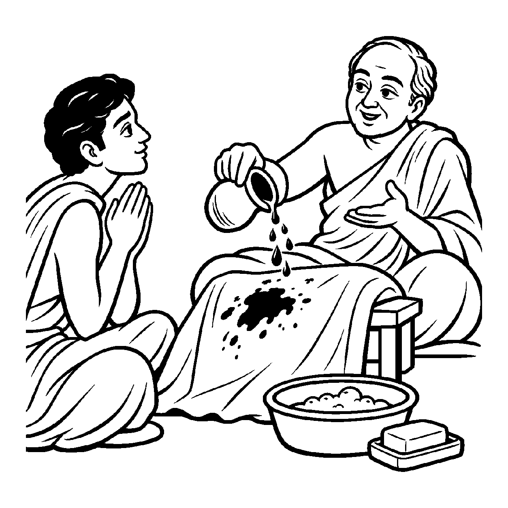
K03_C105 · કાદવનું છાંટણું અને સફેદ વસ્ત્રનો સાક્ષી
૧૦૫. પરકર્તૃત્વ અનુપચરિત અસદ્ભૂત વ્યવહારpress/K03_C105_chapter_129_parakartritva_anupacharita_asadbhuta_vyavahara_katha_r01_press.png
press_pixels_validated_review_pending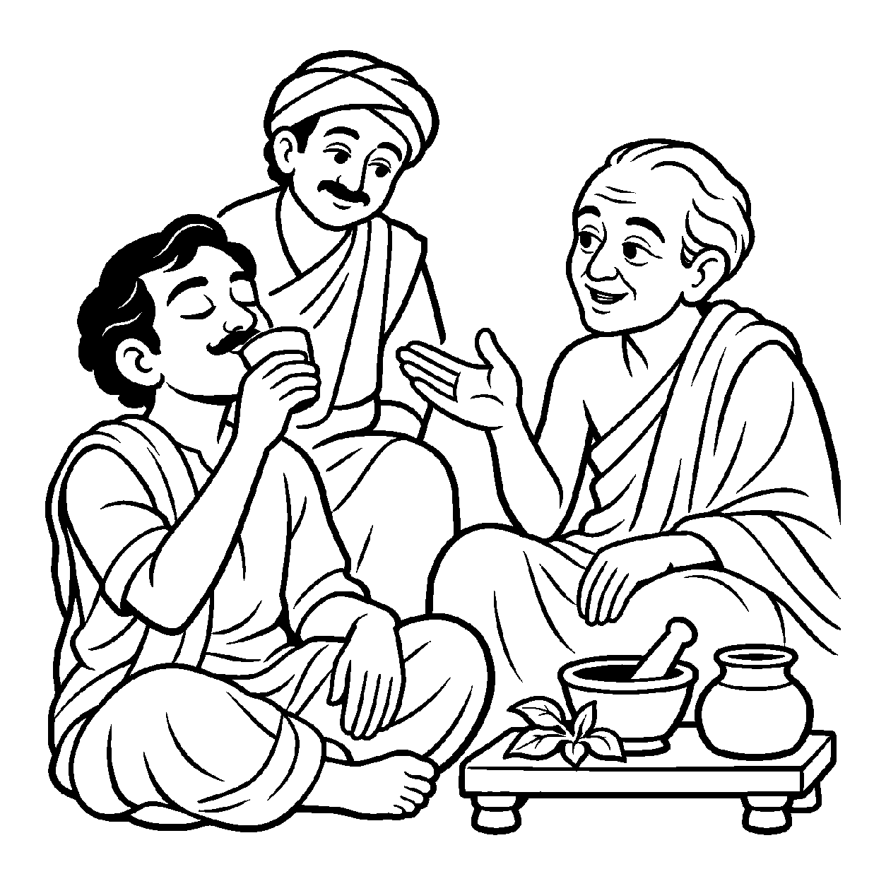
K03_C106 · કડવી ઔષધિ અને વૈદ્યરાજનો વિવેકી દર્દી
૧૦૬. પરભોક્તૃત્વ અનુપચરિત અસદ્ભૂત વ્યવહારpress/K03_C106_chapter_129_1_parabhoktritva_anupacharita_asadbhuta_vyavahara_katha_r01_press.png
press_pixels_validated_review_pending
K03_C107 · વિશાળ હવેલીનો કડિયાકામ અને અહંકારી શેઠ
૧૦૭. પરકર્તૃત્વ ઉપચરિત અસદ્ભૂત વ્યવહારpress/K03_C107_chapter_129_2_parakartritva_upacharita_asadbhuta_vyavahara_katha_r01_press.png
press_pixels_validated_review_pending
K03_C108 · રાજાનો છપ્પનભોગ અને સંતનો ઉપવાસ
૧૦૮. પરભોક્તૃત્વ ઉપચરિત અસદ્ભૂત વ્યવહારpress/K03_C108_chapter_129_3_parabhoktritva_upacharita_asadbhuta_vyavahara_katha_r01_press.png
press_pixels_validated_review_pending
K03_C109 · સોનાની બેડી અને લોઢાની સાંકળ
૧૦૯. પરકર્મત્વ અસદ્ભૂત વ્યવહારpress/K03_C109_chapter_130_parakarmatva_asadbhuta_vyavahara_katha_r01_press.png
press_pixels_validated_review_pending
K03_C110 · ચશ્માની શોધ અને આંતરિક દ્રષ્ટિનો ઉદય
૧૧૦. પરકરણત્વ અસદ્ભૂત વ્યવહારpress/K03_C110_chapter_131_parakaranatva_asadbhuta_vyavahara_katha_r01_press.png
press_pixels_validated_review_pending
K03_C111 · વાવનું નિર્માણ અને તરસ્યા વટેમાર્ગુઓ
૧૧૧. પરસંપ્રદાનત્વ અસદ્ભૂત વ્યવહારpress/K03_C111_chapter_132_parasampradanatva_asadbhuta_vyavahara_katha_r01_press.png
press_pixels_validated_review_pending
K03_C112 · સોનામાંથી અલગ થતો કાદવ અને તપસ્વીનો સંશય
૧૧૨. પર-અપાદાનત્વ અસદ્ભૂત વ્યવહારpress/K03_C112_chapter_133_parapadantva_asadbhuta_vyavahara_katha_r01_press.png
press_pixels_validated_review_pending
K03_C113 · કમળપત્ર અને સરોવરનું અગાધ જળ
૧૧૩. પરાધિકરણત્વ અસદ્ભૂત વ્યવહારpress/K03_C113_chapter_134_paradhikaranatva_asadbhuta_vyavahara_katha_r01_press.png
press_pixels_validated_review_pending
K03_C114 · રાજાની માલિકી અને જંગલનો અદૃશ્ય પવન
૧૧૪. પરસ્વામિત્વ અસદ્ભૂત વ્યવહારpress/K03_C114_chapter_135_parasvamitva_asadbhuta_vyavahara_katha_r01_press.png
press_pixels_validated_review_pending
K03_C115 · સળગતો અંગારો અને ક્રોધી યુવાન
૧૧૫. સ્વજાતિકારણે સ્વજાતિકાર્યોપચારક વ્યવહારpress/K03_C115_chapter_136_svajatikarane_svajatikaryopacharaka_vyavahara_katha_r01_press.png
press_pixels_validated_review_pending
K03_C116 · રણની તરસ અને હીરાની પોટલી
૧૧૬. એકજાતિકારણે અન્યજાતિકાર્યોપચારક વ્યવહારpress/K03_C116_chapter_137_ekajatikarane_anyajatikaryopacharaka_vyavahara_katha_r01_press.png
press_pixels_validated_review_pending
K03_C117 · દીપકથી દીપક પ્રગટાવવાની પરંપરા
૧૧૭. સ્વજાતિકારણે અન્યજાતિકારણોપચારક વ્યવહારpress/K03_C117_chapter_138_svajatikarane_anyajatikaranopacharaka_vyavahara_katha_r01_press.png
press_pixels_validated_review_pending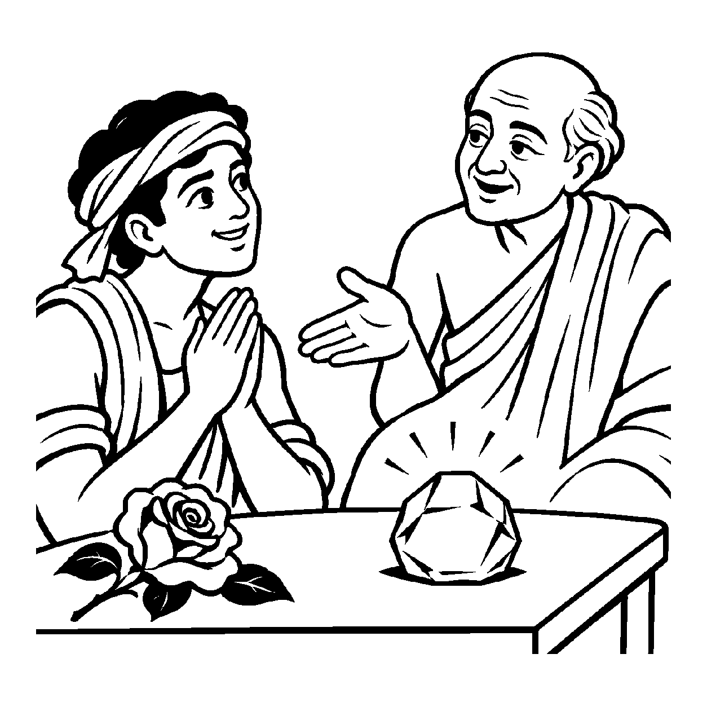
K03_C118 · કાચનો સ્ફટિક અને લાલ ગુલાબનો આભાસ
૧૧૮. એકજાતિકાર્યે અન્યજાતિકારણોપચારક વ્યવહારpress/K03_C118_chapter_139_ekajatikarye_anyajatikaranopacharaka_vyavahara_katha_r01_press.png
press_pixels_validated_review_pending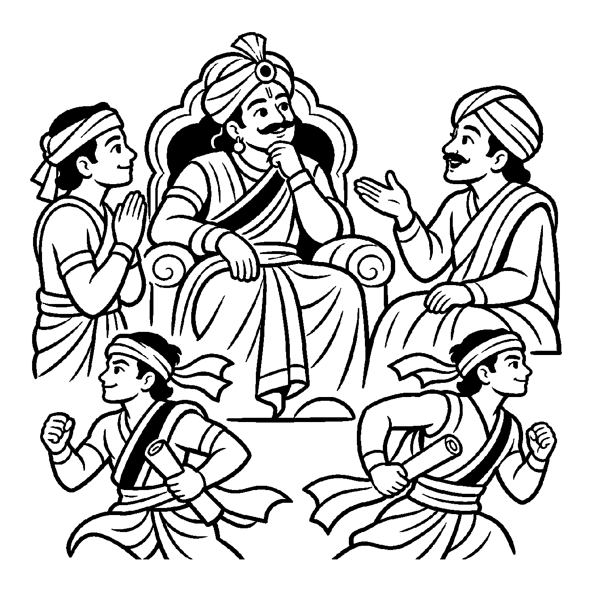
K03_C119 · રાજ્યનો દૂત અને રાજાનો ઊંડો સંશય
૧૧૯. એકજાત્યલ્પે અન્યજાતિપૂર્ણોપચારક વ્યવહારpress/K03_C119_chapter_140_ekajatyalpe_anyajatipurnopacharaka_vyavahara_katha_r01_press.png
press_pixels_validated_review_pending
K03_C120 · અંધારી ગુફામાં પ્રગટેલી દીવાસળી
૧૨૦. સ્વજાત્યલ્પે સ્વજાતિપૂર્ણોપચારક વ્યવહારpress/K03_C120_chapter_141_svajatyalpe_svajatipurnopacharaka_vyavahara_katha_r01_press.png
press_pixels_validated_review_pending
K03_C121 · ખાલી સિંહાસન અને રાજાનું ગૌરવ
૧૨૧. એકજાત્યાધારે અન્યજાત્યાધેયોપચારક વ્યવહારpress/K03_C121_chapter_142_ekajatyadhare_anyajatyadheyopacharaka_vyavahara_katha_r01_press.png
press_pixels_validated_review_pending
K03_C122 · વિશાળ નદી અને તેમાં ભળતાં અસંખ્ય ઝરણાં
૧૨૨. સ્વજાત્યાધારે સ્વજાત્યાધેયોપચારક વ્યવહારpress/K03_C122_chapter_143_svajatyadhare_svajatyadheyopacharaka_vyavahara_katha_r01_press.png
press_pixels_validated_review_pending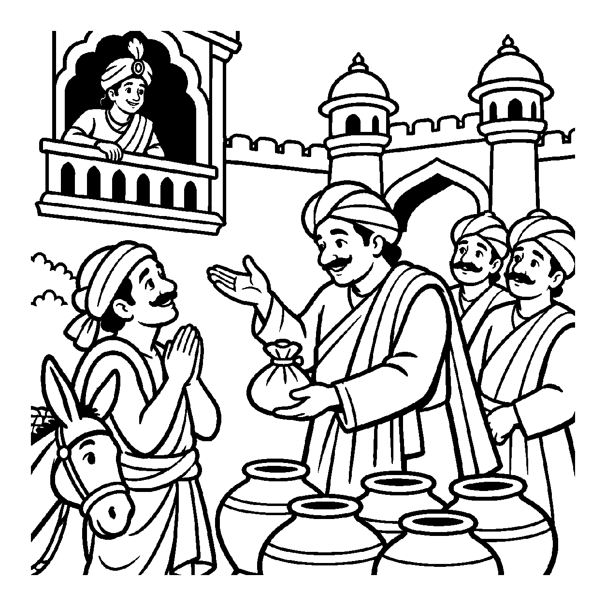
K03_C123 · માટીનો કુંભાર અને રાજાનો મહેલ
૧૨૩. એકજાત્યાધેયે અન્યજાત્યાધારોપચારક વ્યવહારpress/K03_C123_chapter_144_ekajatyadheye_anyajatyadharopacharaka_vyavahara_katha_r01_press.png
press_pixels_validated_review_pending
K03_C124 · અજાણ્યા નગરમાં ખોવાયેલી માતા
૧૨૪. સ્વજાત્યાધેયે સ્વજાત્યાધારોપચારક વ્યવહારpress/K03_C124_chapter_145_svajatyadheye_svajatyadharopacharaka_vyavahara_katha_r01_press.png
press_pixels_validated_review_pending
K03_C125 · વરસાદમાં છત્રી અને રાજાનો પ્રશ્ન
૧૨૫. તદ્વતી તદુપચારક વ્યવહારpress/K03_C125_chapter_146_tadvati_tadupacharaka_vyavahara_katha_r01_press.png
press_pixels_validated_review_pending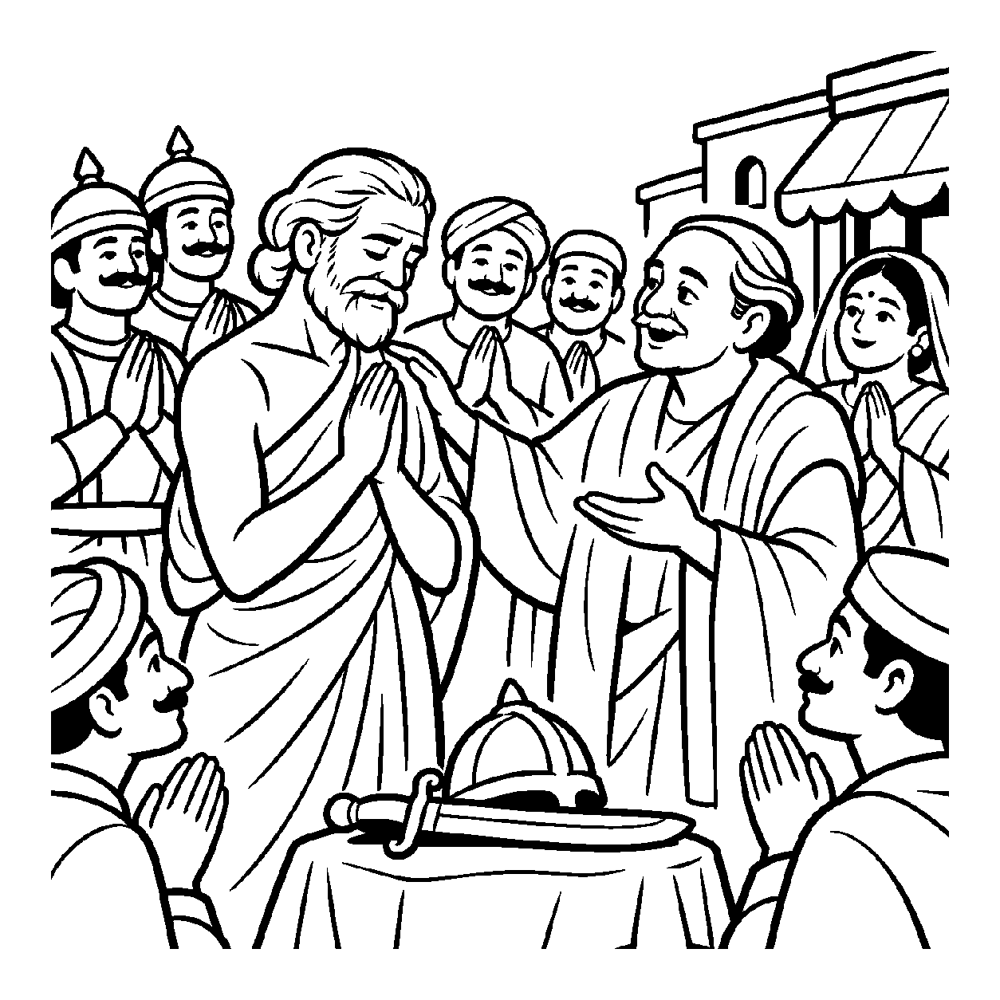
K03_C126 · સેનાપતિની નિવૃત્તિ અને નગરજનોનો સત્કાર
૧૨૬. અતીતસામીપ્યે તદુપચારક વ્યવહારpress/K03_C126_chapter_147_atitasamipye_tadupacharaka_vyavahara_katha_r01_press.png
press_pixels_validated_review_pending
K03_C127 · અર્જુનનું લક્ષ્યવેધ અને ગુરુદ્રોણનો નિર્ણય
૧૨૭. ભાવિનિ ભૂતોપચારક વ્યવહારpress/K03_C127_chapter_148_bhavini_bhutopacharaka_vyavahara_katha_r01_press.png
press_pixels_validated_review_pending
K03_C128 · સોનીની કસોટી અને પિત્તળની ઓળખ
૧૨૮. તત્સદૃશકારણે તદુપચારક વ્યવહારpress/K03_C128_chapter_149_tatsadrishakarane_tadupacharaka_vyavahara_katha_r01_press.png
press_pixels_validated_review_pending
K03_C129 · લાકડીઓની ભારી અને પિતાનો બોધ
૧૨૯. સદૃશ એકત્વોપચારક વ્યવહારpress/K03_C129_chapter_150_sadrisha_ekatvopacharaka_vyavahara_katha_r01_press.png
press_pixels_validated_review_pending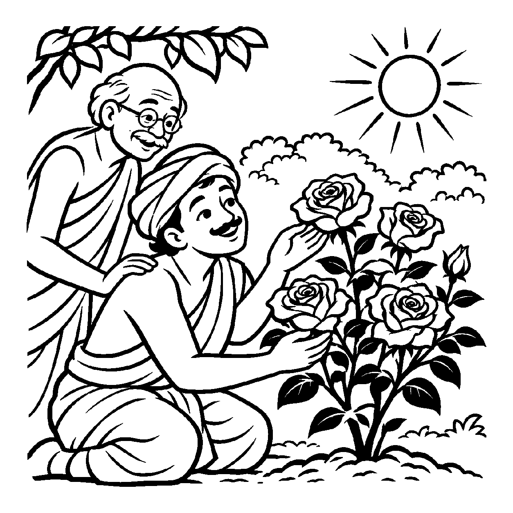
K03_C130 · અશોક વનનો માળી અને સુકાતું ગુલાબ
૧૩૦. આશ્રયે આશ્રયી-ઉપચારક વ્યવહારpress/K03_C130_chapter_151_ashraye_ashrayyupacharaka_vyavahara_katha_r01_press.png
press_pixels_validated_review_pending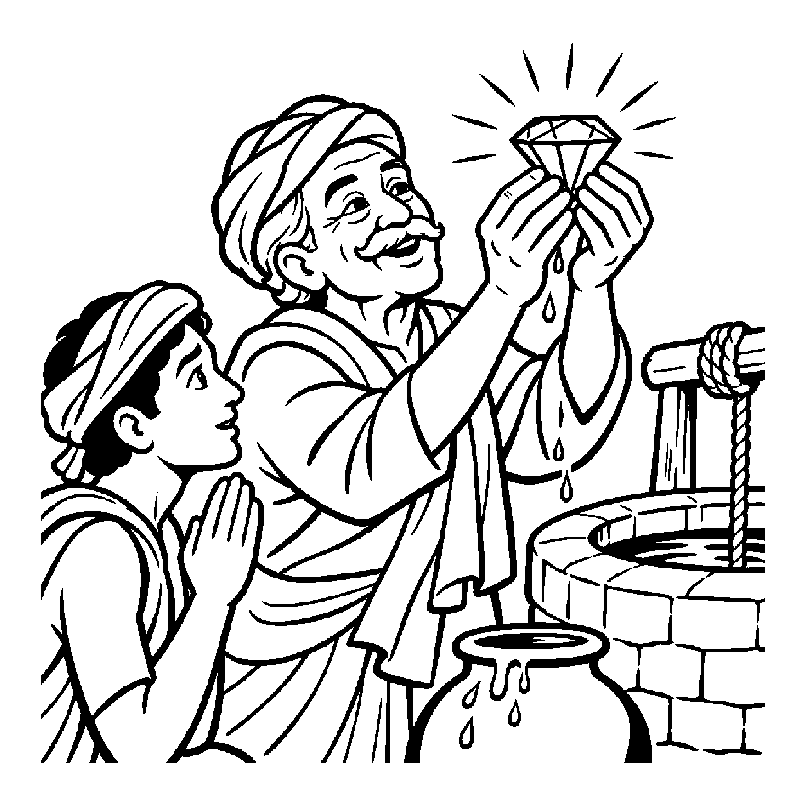
K03_C131 · કાદવવાળો હીરો અને ઝવેરીની દિવ્ય દ્રષ્ટિ
૧૩૧. દ્રવ્યનયpress/K03_C131_chapter_152_dravyanaya_katha_r01_press.png
press_pixels_validated_review_pending
K03_C132 · કઠિયારો અને સુવર્ણ પાત્રની યાત્રા
૧૩૨. નિત્યનયpress/K03_C132_chapter_169_nityanaya_katha_r01_press.png
press_pixels_validated_review_pending
K03_C133 · રાજાનો અરીસો અને પ્રથમ શ્વેત કેશ
૧૩૩. અનિત્યનયpress/K03_C133_chapter_170_anityanaya_katha_r01_press.png
press_pixels_validated_review_pending
K04_C001 · માટીનો કુંભ અને રાજાનો હઠાગ્રહ
૧. અશુદ્ધસ્થૂલ ઋજુસૂત્રનયનામક પર્યાયાર્થિકનયpress/K04_C001_chapter_031_ashuddhasthula_rjusutranayamaka_paryayarthikanaya_katha_r01_press.png
press_pixels_validated_review_pending
K04_C002 · માટીના મોલ્ડમાંથી પ્રગટેલી શુદ્ધ સ્વર્ણ પ્રતિમા
૨. શુદ્ધસ્થૂલ ઋજુસૂત્રનયનામક પર્યાયાર્થિકનયpress/K04_C002_chapter_032_shuddhasthula_rjusutranayamaka_paryayarthikanaya_katha_r01_press.png
press_pixels_validated_review_pending
K04_C003 · અગ્નિની જવાળા અને સમતાનો શીતળ જળકુંભ
૩. અશુદ્ધસૂક્ષ્મ ઋજુસૂત્રનયનામક પર્યાયાર્થિકનયpress/K04_C003_chapter_033_ashuddhasukshma_rjusutranayamaka_paryayarthikanaya_katha_r01_press.png
press_pixels_validated_review_pending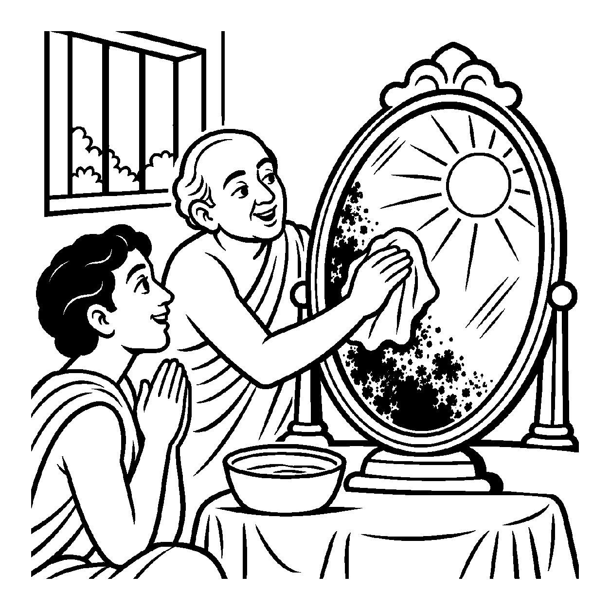
K04_C004 · અરીસા પરની ધૂળ અને સૂર્યનું પૂર્ણ પ્રતિબિંબ
૪. શુદ્ધસૂક્ષ્મ ઋજુસૂત્રનયનામક પર્યાયાર્થિકનયpress/K04_C004_chapter_034_shuddhasukshma_rjusutranayamaka_paryayarthikanaya_katha_r01_press.png
press_pixels_validated_review_pending
K04_C005 · હિમાલયનું શિખર અને ચિંતકનો વિસ્મય
૫. અનાદિનિત્ય પર્યાયાર્થિકનયpress/K04_C005_chapter_035_anadinitya_paryayarthikanaya_katha_r01_press.png
press_pixels_validated_review_pendingK04_C006 · સોનાની ભઠ્ઠી અને ઝવેરીનો વિવેકી શિષ્ય
૬. સાદિનિત્ય પર્યાયાર્થિકનયpress/K04_C006_chapter_036_sadinitya_paryayarthikanaya_katha_r01_press.png
press_pixels_validated_review_pending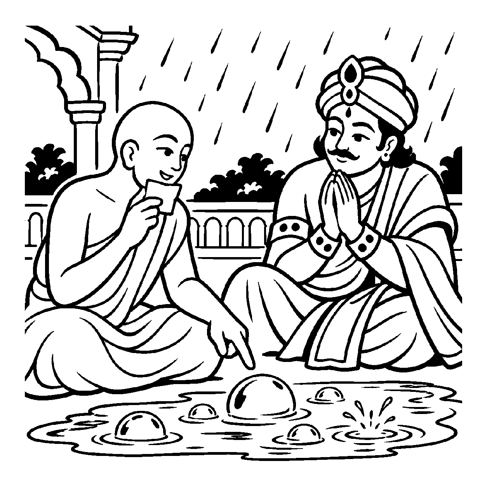
K04_C007 · પાણીનો પરપોટો અને રાજાનો દીર્ઘ શોક
૭. સત્તાગૌણોત્પાદવ્યયગ્રાહક નિત્યઅશુદ્ધપર્યાયાર્થિકનયpress/K04_C007_chapter_037_sattagaunotpadavyayagrahaka_nitya_ashuddhaparyayarthikanaya_katha_r01_press.png
press_pixels_validated_review_pending
K04_C008 · કુંભારનો ચાકડો અને માટીનું અવિચળ સત્ય
૮. સત્તાસાપેક્ષ નિત્ય અશુદ્ધપર્યાયાર્થિકનયpress/K04_C008_chapter_038_sattasapeksha_nitya_ashuddhaparyayarthikanaya_katha_r01_press.png
press_pixels_validated_review_pending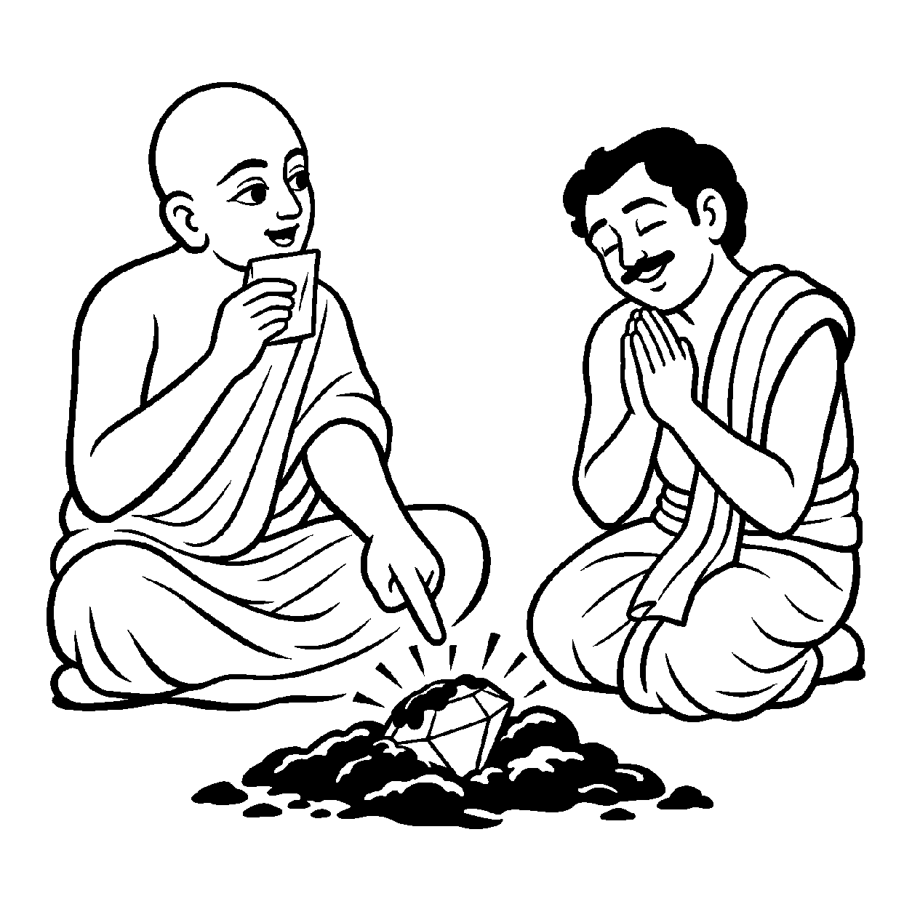
K04_C009 · કાદવમાં પડેલો સૂર્યકાંત મણિ અને પારખુ સંત
૯. ઉપાધિનિરપેક્ષ નિત્ય શુદ્ધપર્યાયાર્થિકનયpress/K04_C009_chapter_039_upadhinirapeksha_nitya_shuddhaparyayarthikanaya_katha_r01_press.png
press_pixels_validated_review_pending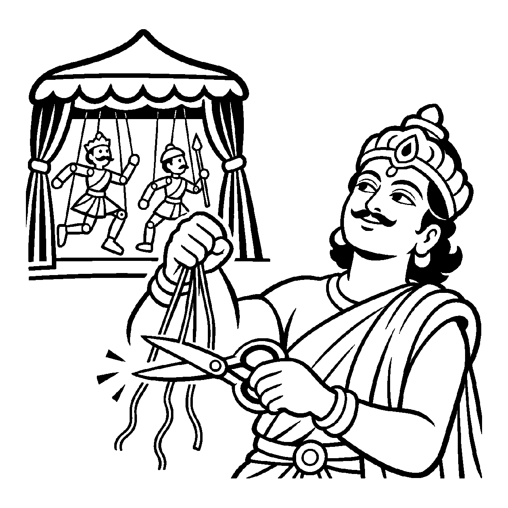
K04_C010 · કઠપૂતળીનો ખેલ અને મુક્ત પ્રેક્ષક
૧૦. ઉપાધિસાપેક્ષ નિત્ય અશુદ્ધપર્યાયાર્થિકનયpress/K04_C010_chapter_040_upadhisapeksha_nitya_ashuddhaparyayarthikanaya_katha_r01_press.png
press_pixels_validated_review_pending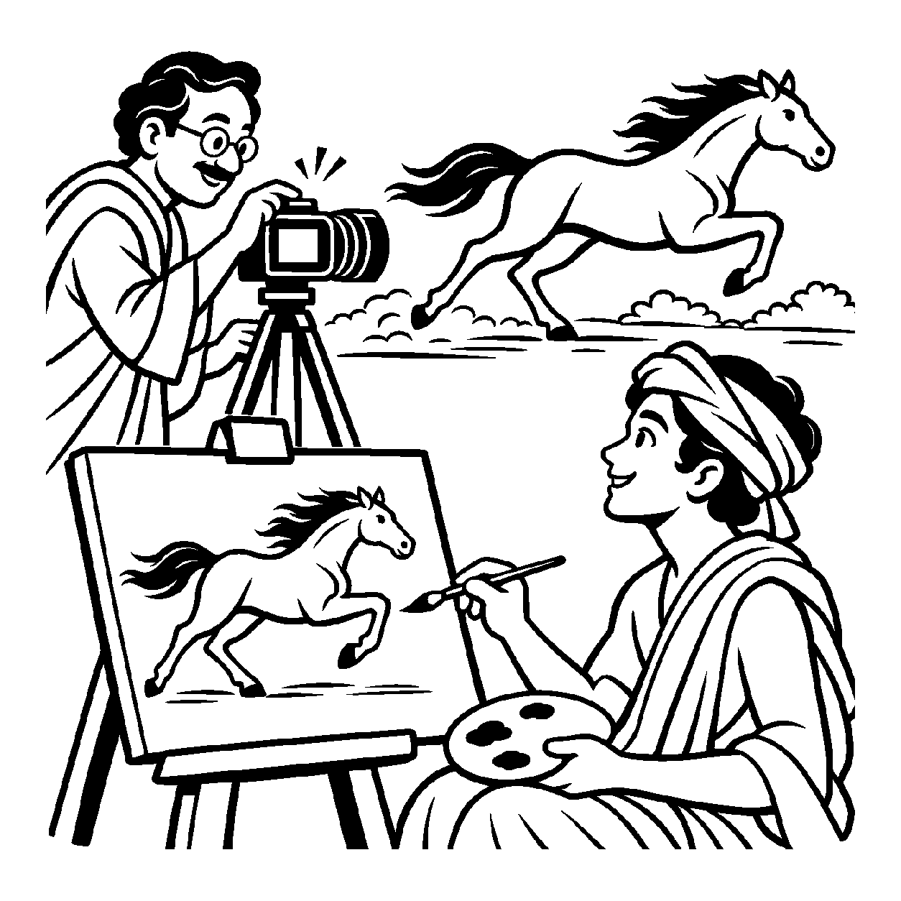
K04_C011 · કેમેરાનો ક્લિક અને દોડતો ઘોડો
૧૧. અશુદ્ધસ્થૂલ ઋજુસૂત્રનયpress/K04_C011_chapter_055_ashuddhasthula_rjusutranaya_katha_r01_press.png
press_pixels_validated_review_pending
K04_C012 · સોનાનો મોલ્ડ અને પ્રગટેલી દિવ્ય મૂર્તિ
૧૨. શુદ્ધસૂક્ષ્મ ઋજુસૂત્રનયpress/K04_C012_chapter_056_shuddhasukshma_rjusutranaya_katha_r02_press.png
press_pixels_validated_review_pending
K04_C013 · જૂનો વડલો અને ગામના વડીલની વાર્તા
૧૩. અનાદિનિત્ય પર્યાયાર્થિકનયpress/K04_C013_chapter_057_anadinitya_paryayarthikanaya_katha_r01_press.png
press_pixels_validated_review_pending
K04_C014 · લોઢાની સાંકળ અને મુક્ત પંખીની અનંત ઉડાન
૧૪. સાદિનિત્ય પર્યાયાર્થિકનયpress/K04_C014_chapter_058_sadinitya_paryayarthikanaya_katha_r01_press.png
press_pixels_validated_review_pending
K04_C015 · રેતીની ઘડિયાળ અને રાજાનો ગર્વ
૧૫. સત્તાગૌણોત્પાદવ્યયગ્રાહક નિત્યાશુદ્ધ પર્યાયાર્થિકનયpress/K04_C015_chapter_059_sattagaunotpadavyayagrahaka_nityashuddha_paryayarthikanaya_katha_r02_press.png
press_pixels_validated_review_pending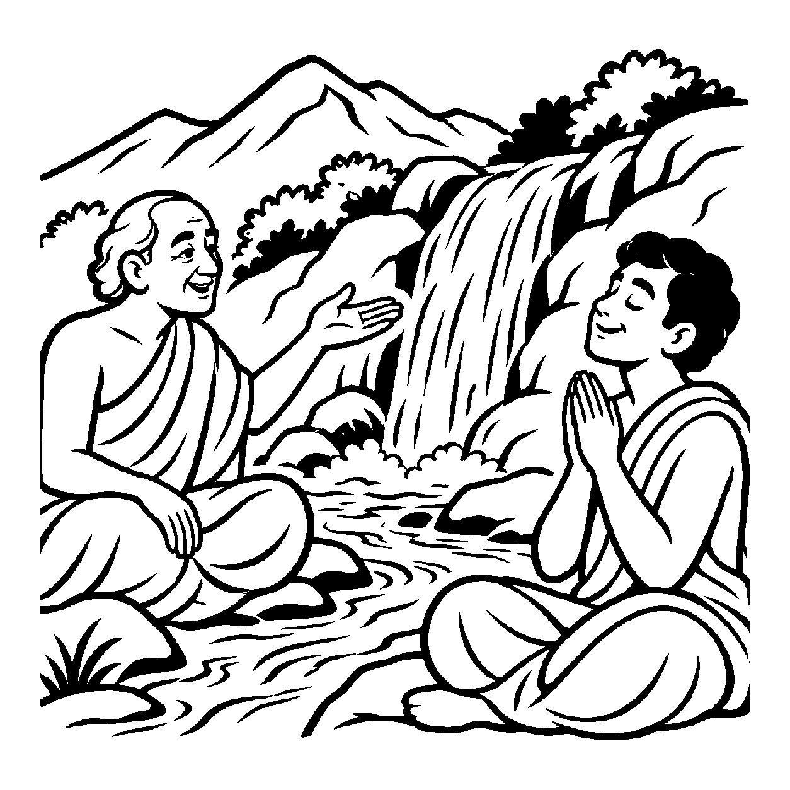
K04_C016 · નિર્મળ ઝરણું અને પર્વતનો શિષ્ય
૧૬. સત્તાસાપેક્ષ નિત્યશુદ્ધપર્યાયાર્થિકનયpress/K04_C016_chapter_060_sattasapeksha_nityashuddhaparyayarthikanaya_katha_r01_press.png
press_pixels_validated_review_pending
K04_C017 · કાદવવાળો શંખ અને સાગરનો કિનારો
૧૭. ઉપાધિસાપેક્ષ નિત્યશુદ્ધપર્યાયાર્થિકનયpress/K04_C017_chapter_061_upadhisapeksha_nityashuddhaparyayarthikanaya_katha_r02_press.png
press_pixels_validated_review_pending
K04_C018 · અંધારા ઓરડામાં દીવાની જ્યોત અને વિવેકી મુસાફર
૧૮. પર્યાયનયpress/K04_C018_chapter_153_paryayanaya_katha_r01_press.png
press_pixels_validated_review_pending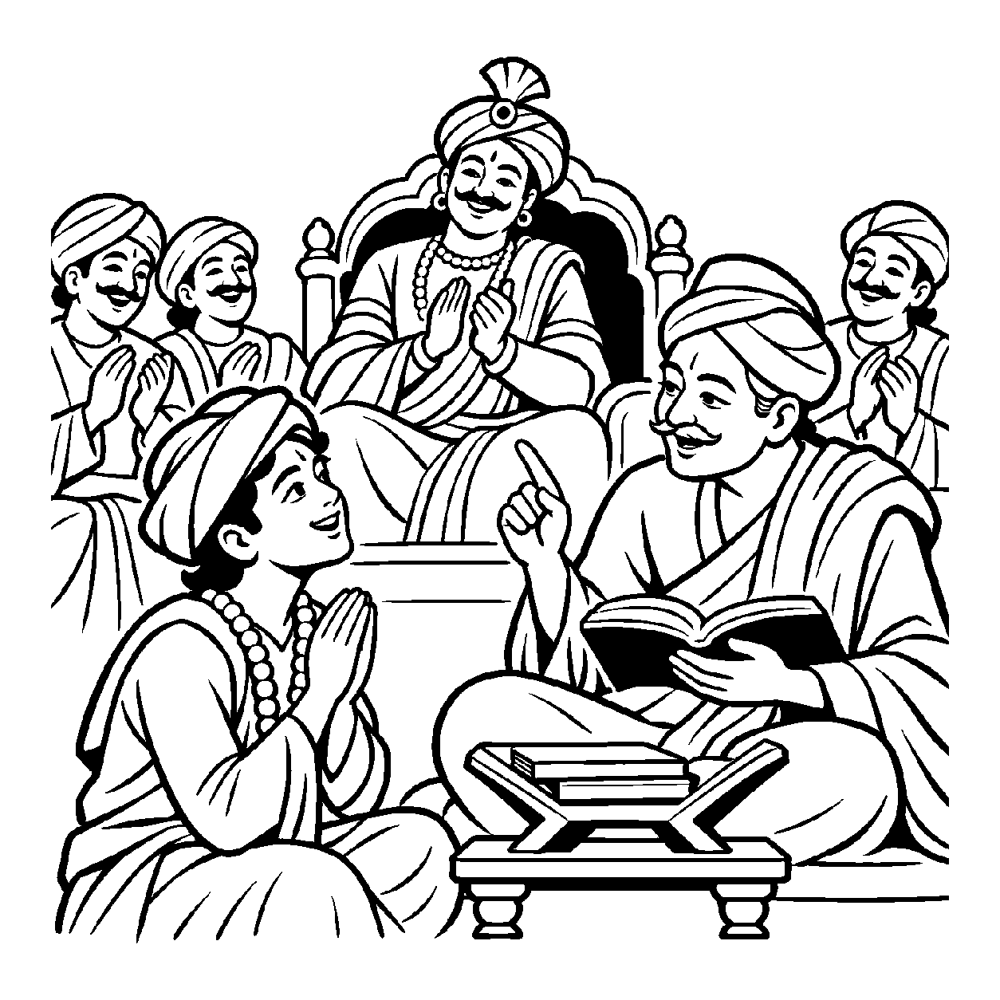
K05_C001 · રાજદરબારની વ્યાકરણ સભા અને પંડિતનો વિવેક
૧. શબ્દનયpress/K05_C001_chapter_041_shabdanaya_katha_r01_press.png
press_pixels_validated_review_pending
K05_C002 · રાજવૈદ્યનો પ્રિસ્ક્રિપ્શન અને શિષ્યની ભૂલ
૨. શબ્દનયપર્યાયાર્થિક પ્રતિપાદક વ્યવહારpress/K05_C002_chapter_100_shabdanayaparyayarthika_pratipadaka_vyavahara_katha_r01_press.png
press_pixels_validated_review_pending
K05_C003 · અંધારી રાતનો મુસાફર અને અવિચળ દીપક
૩. અસ્તિત્વનયpress/K05_C003_chapter_154_astitvanaya_katha_r01_press.png
press_pixels_validated_review_pending
K05_C004 · દૂધમાં ભળેલું મીઠું અને સ્વાદનો વિવેક
૪. નાસ્તિત્વનયpress/K05_C004_chapter_155_nastitvanaya_katha_r01_press.png
press_pixels_validated_review_pending
K05_C005 · સોનાનો હાર અને પિત્તળની તુલના
૫. અસ્તિત્વ-નાસ્તિત્વનયpress/K05_C005_chapter_156_astitva_nastitvanaya_katha_r01_press.png
press_pixels_validated_review_pending
K05_C006 · સૂર્યાસ્તનું દ્રશ્ય અને મૌન કવિ
૬. અવક્તવ્યનયpress/K05_C006_chapter_157_avaktavyanaya_katha_r01_press.png
press_pixels_validated_review_pending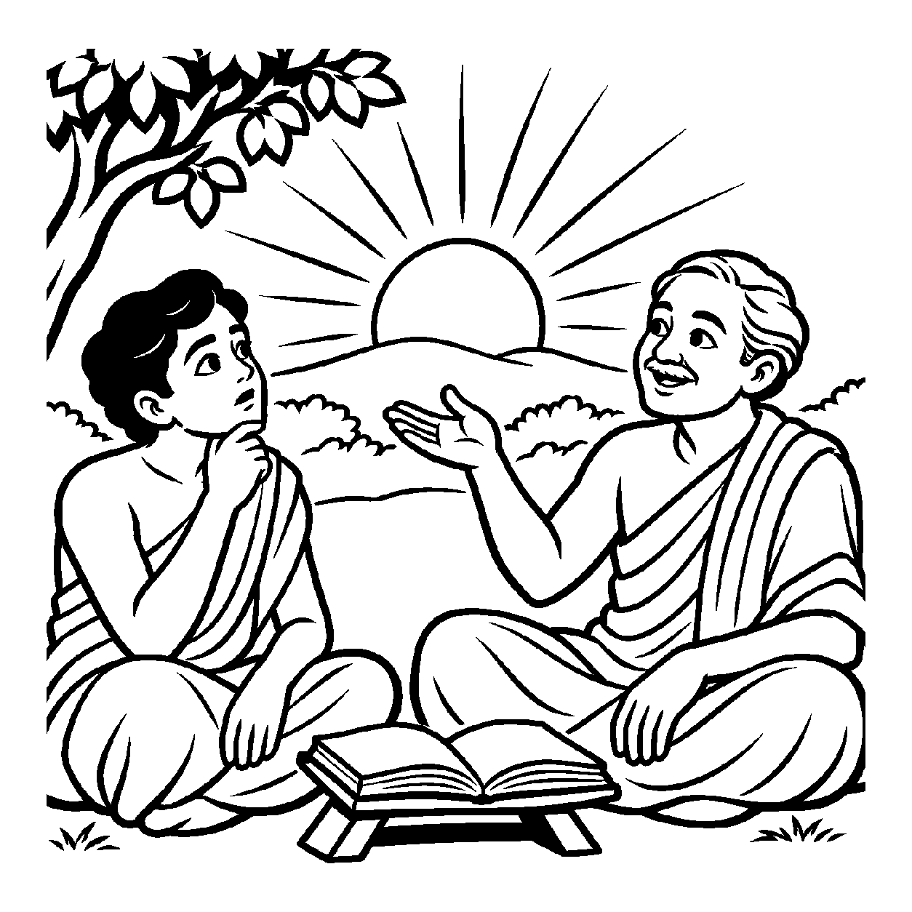
K05_C007 · સૂર્યનું તેજ અને શિષ્યની અસમંજસ
૭. અસ્તિત્વ-અવક્તવ્યનયpress/K05_C007_chapter_158_astitva_avaktavyanaya_katha_r01_press.png
press_pixels_validated_review_pending
K05_C008 · કમળપત્ર અને જળબિંદુનો અકથ્ય સંબંધ
૮. નાસ્તિત્વ-અવક્તવ્યનયpress/K05_C008_chapter_159_nastitva_avaktavyanaya_katha_r01_press.png
press_pixels_validated_review_pending
K06_C001 · ત્રણ વિદ્વાનો અને રાજાની પરીક્ષા
૧. સમભિરૂઢનયpress/K06_C001_chapter_042_samabhirudhanaya_katha_r01_press.png
press_pixels_validated_review_pendingK06_C002 · અજાણ્યા ગામનો વટેમાર્ગુ અને 'પંકજ'ની શોધ
૨. સમભિરૂઢનયપર્યાયાર્થિક પ્રતિપાદક વ્યવહારpress/K06_C002_chapter_101_samabhirudhanayaparyayarthika_pratipadaka_vyavahara_katha_r01_press.png
press_pixels_validated_review_pending
K06_C003 · અંધજનો અને હાથીનું પૂર્ણ દર્શન
૩. અસ્તિત્વ-નાસ્તિત્વ-અવક્તવ્યનયpress/K06_C003_chapter_160_astitva_nastitva_avaktavyanaya_katha_r01_press.png
press_pixels_validated_review_pending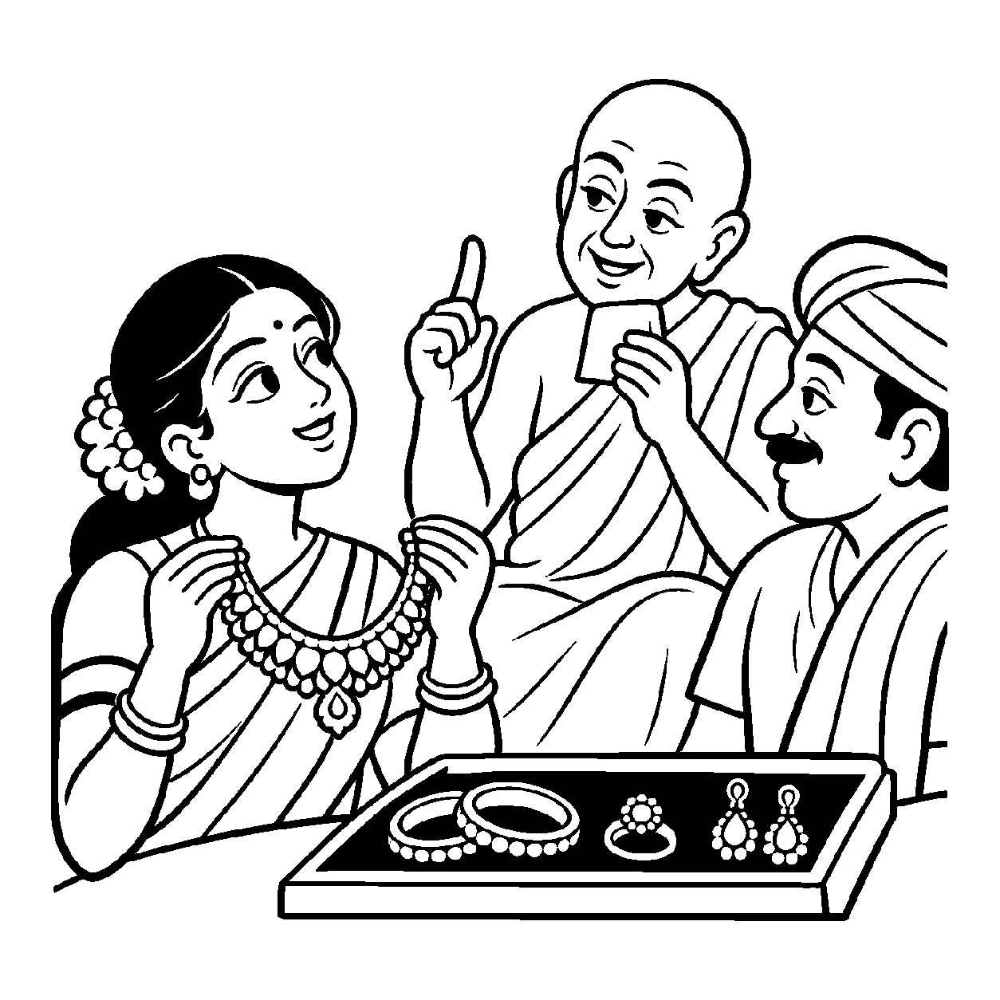
K06_C004 · સોનાના આભૂષણો અને કન્યાનો હઠ
૪. વિકલ્પનયpress/K06_C004_chapter_161_vikalpanaya_katha_r01_press.png
press_pixels_validated_review_pending
K06_C005 · સૂર્યનું અખંડ તેજ અને આંખો મીંચનાર સાધક
૫. અવિકલ્પનયpress/K06_C005_chapter_162_avikalpanaya_katha_r01_press.png
press_pixels_validated_review_pending
K06_C006 · અનામી રત્ન અને નાવિકનું હોકાયંત્ર
૬. નામનયpress/K06_C006_chapter_163_namanaya_katha_r01_press.png
press_pixels_validated_review_pending
K06_C007 · શિલ્પીની છીણી અને ભક્તનો સાક્ષાત્કાર
૭. સ્થાપનાનયpress/K06_C007_chapter_164_sthapana_naya_katha_r01_press.png
press_pixels_validated_review_pending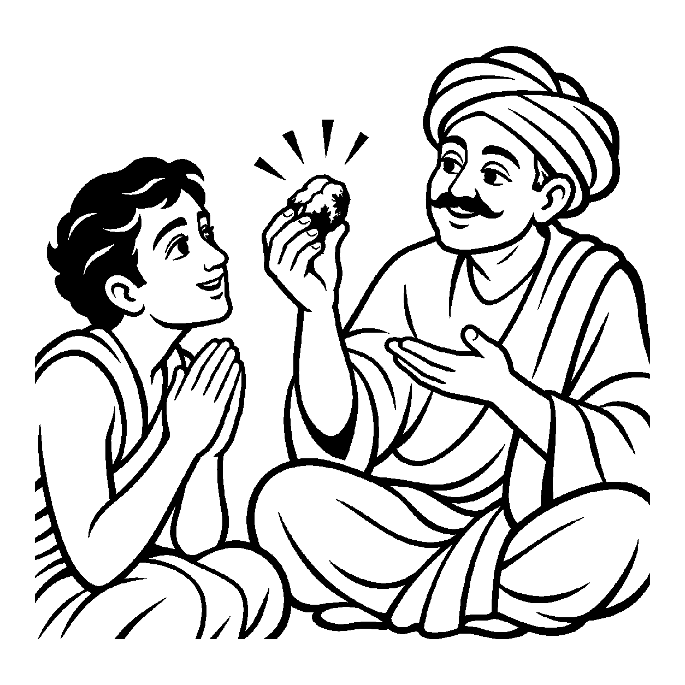
K06_C008 · ધૂળભર્યો હીરો અને ઝવેરીની દીર્ઘદ્રષ્ટિ
૮. દ્રવ્યનયpress/K06_C008_chapter_165_dravyanaya_katha_r01_press.png
press_pixels_validated_review_pending
K06_C009 · ભૂતકાળના દાતા અને વર્તમાનનો ક્રોધ
૯. ભાવનયpress/K06_C009_chapter_166_bhavanaya_katha_r01_press.png
press_pixels_validated_review_pending
K06_C010 · માટીના વાસણો અને કુંભારનો એકતાર
૧૦. સામાન્યનયpress/K06_C010_chapter_167_samanyanaya_katha_r01_press.png
press_pixels_validated_review_pending
K06_C011 · વૈદ્યરાજની પરખ અને ત્રણ શિષ્યોની પરીક્ષા
૧૧. વિશેષનયpress/K06_C011_chapter_168_visheshanaya_katha_r01_press.png
press_pixels_validated_review_pending
K07_C001 · અશ્વપાલકની ઓળખ અને રાજાનો ન્યાય
૧. એવંભૂતનયpress/K07_C001_chapter_043_evambhutamaya_katha_r01_press.png
press_pixels_validated_review_pending
K07_C002 · વૈદ્યનું બોર્ડ અને દર્દીનો પ્રાણ
૨. એવંભૂતનયપર્યાયાર્થિક પ્રતિપાદક વ્યવહારpress/K07_C002_chapter_102_evambhutana_paryayarthika_pratipadaka_vyavahara_katha_r01_press.png
press_pixels_validated_review_pending
K07_C003 · કૂવાનો દેડકો અને સમુદ્રનું દર્શન
૩. સર્વગતનયpress/K07_C003_chapter_171_sarvagatanaya_katha_r01_press.png
press_pixels_validated_review_pending
K07_C004 · દેશાવર ભટકતો વેપારી અને નિજ હવેલી
૪. અસર્વગતનયpress/K07_C004_chapter_172_asarvagatanaya_katha_r01_press.png
press_pixels_validated_review_pending
K07_C005 · અરીસો અને કાળી મેશનું ટીલું
૫. શૂન્યનયpress/K07_C005_chapter_173_shunyanaya_katha_r01_press.png
press_pixels_validated_review_pending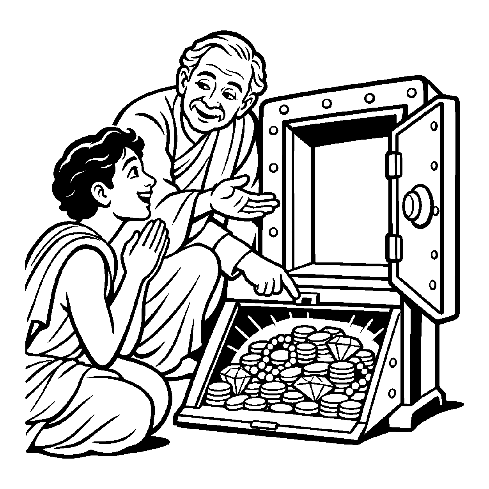
K07_C006 · ખાલી તિજોરી અને છુપાયેલો ખજાનો
૬. અશૂન્યનયpress/K07_C006_chapter_174_ashunyanaya_katha_r01_press.png
press_pixels_validated_review_pendingK07_C007 · શિલ્પકારની મૂર્તિ અને પથ્થરની એકતા
૭. જ્ઞાનજ્ઞેયાદ્વૈતનયpress/K07_C007_chapter_175_jnanajneyadvaitanaya_katha_r01_press.png
press_pixels_validated_review_pending
K07_C008 · અગ્નિનું પ્રતિબિંબ અને રાજકુમારનો ભય
૮. જ્ઞાનજ્ઞેયદ્વૈતનયpress/K07_C008_chapter_176_jnanajneya_dvaitanaya_katha_r01_press.png
press_pixels_validated_review_pending
K07_C009 · અંધારી ગુફા અને ઝવેરીનો અચળ મણિ
૯. નિયતિનયpress/K07_C009_chapter_177_niyatinaya_katha_r01_press.png
press_pixels_validated_review_pending
K07_C010 · ક્રોધી યુવાન અને નદીનું તોફાન
૧૦. અનિયતિનયpress/K07_C010_chapter_178_aniyatinaya_katha_r01_press.png
press_pixels_validated_review_pending
K07_C011 · કસ્તુરી મૃગ અને વનની સુગંધ
૧૧. સ્વભાવનયpress/K07_C011_chapter_179_svabhavanaya_katha_r01_press.png
press_pixels_validated_review_pending
K07_C012 · અણઘડ પથ્થર અને શિલ્પીના ટાંકણા
૧૨. અસ્વભાવનયpress/K07_C012_chapter_180_asvabhavanaya_katha_r01_press.png
press_pixels_validated_review_pending
K07_C013 · અધીરો ખેડૂત અને અંકુરની પ્રતીક્ષા
૧૩. કાલનયpress/K07_C013_chapter_181_kalanaya_katha_r01_press.png
press_pixels_validated_review_pending
K07_C014 · દેવર્ષિનો ક્રોધ અને સાધકનું ધ્યાન
૧૪. અકાલનયpress/K07_C014_chapter_182_akalanaya_katha_r01_press.png
press_pixels_validated_review_pending
K07_C015 · કૂવામાં પડેલો બળદ અને ખેડૂતનો ઉદ્યમ
૧૫. પુરુષકારનયpress/K07_C015_chapter_183_purushakaranaya_katha_r01_press.png
press_pixels_validated_review_pending
K07_C016 · બે વટેમાર્ગુ અને આંધીનો પ્રકોપ
૧૬. દૈવનયpress/K07_C016_chapter_184_daivanaya_katha_r01_press.png
press_pixels_validated_review_pending
K07_C017 · અહંકારી રાજા અને કારાગૃહની રાત
૧૭. ઈશ્વરનયpress/K07_C017_chapter_185_ishvaranaya_katha_r01_press.png
press_pixels_validated_review_pending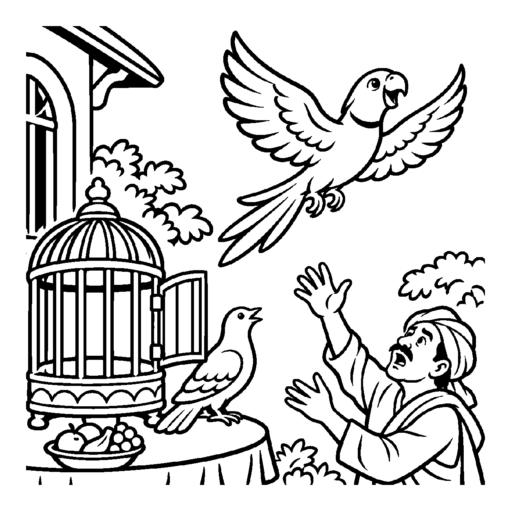
K07_C018 · પાંજરાનો પોપટ અને આકાશનું ઉડ્ડયન
૧૮. અનીશ્વરનયpress/K07_C018_chapter_186_anishvaranaya_katha_r01_press.png
press_pixels_validated_review_pending
K07_C019 · રત્નોની પેટી અને દરિદ્ર યુવાન
૧૯. ગુણિનયpress/K07_C019_chapter_187_guninaya_katha_r01_press.png
press_pixels_validated_review_pending
K07_C020 · અદાલતનો ન્યાયાધીશ અને સાક્ષી વૃક્ષ
૨૦. અગુણિનયpress/K07_C020_chapter_188_aguninaya_katha_r01_press.png
press_pixels_validated_review_pending
K07_C021 · કાંટાળું ખેતર અને પરિશ્રમી કિસાન
૨૧. કર્તૃનયpress/K07_C021_chapter_189_kartrunaya_katha_r01_press.png
press_pixels_validated_review_pending
K07_C022 · માટીનો ભાર ઉપાડતો મજૂર અને જ્ઞાની મુનિ
૨૨. અકર્તૃનયpress/K07_C022_chapter_190_akartrunaya_katha_r01_press.png
press_pixels_validated_review_pending
K07_C023 · મધનું ટીપું અને ઝાડ પર લટકતો વટેમાર્ગુ
૨૩. ભોક્તાનયpress/K07_C023_chapter_191_bhoktanaya_katha_r01_press.png
press_pixels_validated_review_pending
K07_C024 · રાજાનો બંદીવાન અને ધ્યાની સંત
૨૪. અભોક્તાનયpress/K07_C024_chapter_192_abhoktanaya_katha_r01_press.png
press_pixels_validated_review_pending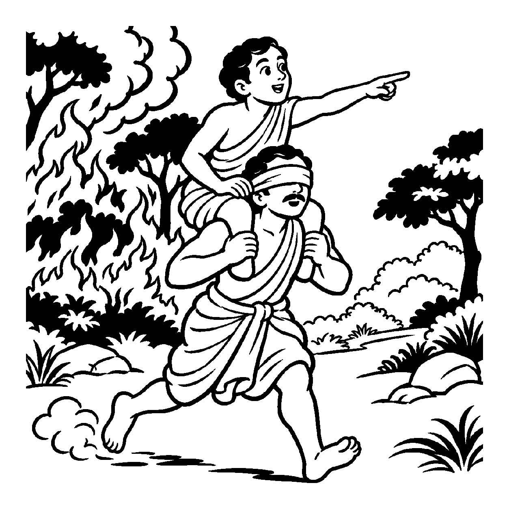
K07_C025 · અંધ-પાંગળાનું મિલન અને વનની આગ
૨૫. ક્રિયાનયpress/K07_C025_chapter_193_kriyanaya_katha_r01_press.png
press_pixels_validated_review_pending
K07_C026 · અંધારી કોઠડી અને સાચો હીરો
૨૬. જ્ઞાનનયpress/K07_C026_chapter_194_jnananaya_katha_r01_press.png
press_pixels_validated_review_pending
K07_C027 · પાંજરાનો સિંહ અને મુક્તિનો માર્ગ
૨૭. વ્યવહારનયpress/K07_C027_chapter_195_vyavaharanaya_katha_r01_press.png
press_pixels_validated_review_pending
K07_C028 · રાજકુમાર અને ભીલનું પાલનપોષણ
૨૮. નિશ્ચયનયpress/K07_C028_chapter_196_nishchayanaya_katha_r01_press.png
press_pixels_validated_review_pending
K07_C029 · મેલો અરીસો અને રાજાની રાણી
૨૯. અશુદ્ધનયpress/K07_C029_chapter_197_ashuddhanaya_katha_r01_press.png
press_pixels_validated_review_pending
K07_C030 · કાદવનું સરોવર અને પૂર્ણિમાનો ચંદ્ર
૩૦. શુદ્ધનયpress/K07_C030_chapter_198_shuddhanaya_katha_r01_press.png
press_pixels_validated_review_pending
K07_C031 · માટીનો વારસો અને ત્રણ પેઢીઓ
૩૧. ઊર્ધ્વતાસામાન્યનયpress/K07_C031_chapter_199_urdhvatasamanyanaya_katha_r01_press.png
press_pixels_validated_review_pending
K07_C032 · રાજકુમારનું ચિત્ર અને વૃદ્ધ રાજા
૩૨. ઊર્ધ્વતાવિશેષનયpress/K07_C032_chapter_200_urdhvatavisheshanaya_katha_r01_press.png
press_pixels_validated_review_pending
K07_C033 · તોફાની સાગર અને વહાણનું છિદ્ર
૩૩. નિમિત્તત્ત્વ-નિમિત્તદ્રષ્ટિpress/K07_C033_chapter_201_nimittatvanimittadrishti_katha_r01_press.png
press_pixels_validated_review_pending
K07_C034 · સોનાનું પાંજરું અને બે પોપટ
૩૪. સાદૃશ્યનયpress/K07_C034_chapter_202_sadrishyanaya_katha_r01_press.png
press_pixels_validated_review_pending
K07_C035 · કાદવમાંથી પગથિયાં અને મંદિરનું શિખર
૩૫. વૈલક્ષણ્યનયpress/K07_C035_chapter_203_vailakshanyanaya_katha_r01_press.png
press_pixels_validated_review_pending